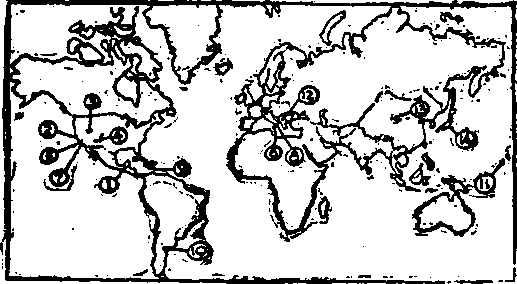

£OYE-
VotXlin 2 EASIER NUMBER, 1921 NtTMBEM 3» 4TO W
CONTENTS of the GOLDEN AGE
LABOB AND ECONOMIC*
Labor T!>o Colt of Value 33* Standards Galore 358 st—t standard* ------3M Larf «< Vaina
«T»»t Value — 111 An C whanging Standard 35»
SOCIAL AND EDUCATIONAL
chriaHaa artllxatim - X3* Emma*—As OMeeOan
FINANCE—COMMEBC8—TRANSPORTATION By Watw or By HaH
Fcueo-Geman Wai'rv'y* HI Lew IDaaiampM Waterway
Mleeeurt Hirer Watwaay M2 OUe Ittrer Watanvay
AGRICULTURE AND HUSBANDRY
Pndnee Infmfla Eg* ,. 353 The Bobla* ud the Wra* 343 . SCIENCE AND INVENTION
A Tear at EaraunraltHi *3!W» Electricity ta Berta
Earth’* Blag* __________Ml Earth Brtng Tied* J*
TRAVEL AND MISCELLANT *
Besurreetioa ot th*
The Double _______ .....372
Bertin Treaty 1878_____-. ..373
Zianiam ..............—___...373
Development of zlealr™. .374 Fnrpooe of Zionism
The Event of Jewish His
Fulfilled Prophecy _.-.377
They shall Build Houaea 377
Money a Factoe_______^378 ,
More Trouble Abend—— 378“
Spirit of the Lord Needed 378
Messiah and the New Cov-etiafic__—
Resurrection 3H»
A Golden Star i portal—38* Ue World'* Unhappiness
<posa) —.......................383
nd* 1* the Hope (poem) 333
Volume II Brooklyu, N. Y., Wednesday, March 16 and 30, 192J Numbers 39 and 40
HOW shall we have the goods shipped, by water or by rail ! is a question they do not need to ask in China; for there the rail routes are few and the water routes are many, so many that in canals and canalized rivers China has more miles of improved waterways than the United States has of railways. But the question is a pertinent one here in the United States, and is attracting a great amount of attention.
?The Government has to* date spent nearly a billion dollars in river and harbor improvements, and the States themselves’Tiave spent a third of a billion more, and have hardly made a start toward satisfying those who want to see the United States as fully canalized as is China. But our canals are not used.
Fifty years ago the canals of the United States were a great factor in its transportation system. Gradually they have been losing in favor; and in spite of a desperate battle to hold and extend their usefulness, it is' found that there are real, not imaginary, difficulties associated with the question of inland water transportation that are not generally known. Charles Whiting Baker has presented many of these facts in a series of articles in the Engineering News Record. A number of items from his exhaustive and illuminating study of the subject are found in this review, together with a considerable amount of matter from other sources.
One of the stock arguments for increased expenditures on artificial waterways is that the railroads have^pejiods when they are so congested that they cannot handle the traffic. But a study of water transportation indicates that irregularities in rail shipments and deliveries have their corresponding difficulties in water transportation. Because it could no longer stand up under competition with the railways the Clyde Steamship Company has been compelled to abandon lines running to Mobile, Tampa, Wilmington, Georgetown and Norfolk, some of whist have been established as long as fifty years, . *
.-Railroad, trains are made up of small units which cag»be easily and inexpensively assembled into trains- susceptible of long hauls; and the units of that train can be switched from one rail?0a<T to another, until finally the units are separated from one another and the freight is at the door of the factory or the warehouse for which it started. -
If boats could always count on promptly, getting full loads, if they could be dispatched on schedule time, if they could discharge as easily as many freight cars' are now designed to disgorge their loads, and if the discharging of the cargo could take place right at the door of the place whither the goods are bound, then the problem of shipping by water ■tyould not be so complicated. And to this problem must be added the important consideration that navigation does not always open and close just when one could wish, but that Jack Frost and summer droughts have ways of their own in such matters.
In order to show a saving over rail transportation the water carriers must handle a great volume of business. They must maintain regular and expensive organizations, winter and summer. If they do not advertise regular service they cannot get patronage; and if they -do advertise regular service the boats must depart on schedule time, whether they have profitable cargoes or not? Moreover, they must take all the cargo offered. If any is left on the dock, the next shipment goes by rail, and ever after. So the water carrier may have a succession of feasts and famines in the way of cargo, at one time not enough to pay, and at another more than can be conveniently carried.
The only reaso'n.fbr advocating waterways is to provide cheaper transportation, and wherever the cost of water transportation is greater than rail transportation, the publie is the loser if the water route is ever abandoned, and the long-time investor loses if it is a long time before the total receipts equal the expenditures. Barges wear out, the same as railroad cars; and during their respective lives the railway car makes an average annual mileage of at least two to four times that of the barge. This has a bearing upon the matter. To build two railways where only one is needed, or to maintain a railway and a waterway where one of them alone can do all the work, is a waste of capital and labor which, in the end, must be paid for by the public.
IT IS calculated that on a long haul the expense of the actual transportation of goods per hundred miles is about one-half by river what it is by rail. The Interstate .Commerce Commission has furnished figures showing that, exclusive of terminal expenses, interest on the investment, and taxes, the cost of moving a ton of freight one mile by rail in the United States in 1918 was a little less than one-fifth of a eent By water it is about one-tenth of a cent. This is one reason why the water routes must carry such an enormous amount of traffic if they are to pay; for under the most favorable conditions there could not be an actual saving of more than ten cents for transporting a ton of freight one hundred miles. -
If the waterways could get that class of business in sufficient quantities, their best chance to operate profitably would be in the handling of general merchandise shipments, upon which the railroad rates are frequently several times as high as the commodity rates fixed' for ore, coal, ice and such other things as are generally regarded as suitable freight for waterborne commerce.
The problem of making waterways profitable is not so much one of the waterway itself as it is of how to get the freight on and off the boats inexpensively; and that is a problem of terminal facilities. Obviously the best chance that a waterway has to be a success financially is where its terminals are' in natural and populous harbors. In such harbors it can receive and deliver freight direct to steamers and waterfront manufacturing plants.
Even then, the boat system of freight delivery is fundamentally expensive and wasteful as . compared with much of the railway-car delivery, i ' The cargo of a boat always has to be hoisted out J from below the water level; and although many very efficient systems have been devised for s unloading ore, coal and such other materials, ’ yet none of these can compare in efficiency with the system by which the entire contents of a ' car may be dumped in a moment just where it is wanted.'
The arrangements for dumping coal into boats at Oswego, and many other points, are so perfect that in a few minutes an entire trainload of coal can be placed aboard a vessel. But it is safe to assume that when the vessel arrives at its destination no such perfect means of unloading exist. An idle boat is an expensive proposition. The daily expense of a 5,500-*-on ocean steamer is estimated at $924 when running and $674 when idle.
Here, then, is the kernel of this question of ~ transportation. It is the matter of loading and unloading that is the key to the problem. Most large business houses have their own switches, and prefer to load all their freight on cars placed on those switches and to receive all their freight in the same way. Not many of the have private wharves; and even if they did. it ' is handier to unload from a car which carries its load high in the air than from a boat which carries its load below water level. In short, the shipper must have equal terminal facilities or he will continue the superior terminal facilities which he does have; and the water carrier, on the other hand, vrill not invest in expensive t^r-minals without advance assurance of permanent business.
In order to compete satisfactorily with mil carriers, experience has demonstrated that the water carrier must be prepared to receive cargo from cars and deliver cargo to cars, so that the cars may be placed on switches wherever desired. This makes it necessary that there should be cooperation between rail carriers and water carriers if the latter are to render satisfactory *■ service; and no such cooperation exists, except in New England.
In fact, there is the reverse of cooperation between rail and water carriers ;~and even the « rates are against the water carriers, for the reason that terminal costs of railway delivery in natural ports are much higher than the rates indicate. Rates to and from ports are fixed as though the costs of transportation were no greater than between inland points..
Indeed, in many instances the ports have specially low rates, supposedly a favor to them, but actually working against them because working against the interests of the water transportation which is their outstanding natural advantage. Rates should be so adjusted as to require rail carriers to charge adequately for the terminal facilities which they provide, thus giving the water carriers an equal opportunity.
That the adjustment of rates to and from _ ports requires close attention is evident from the fact that there is now no profit in coastwise transportation; and the statement that water transportation has inherent weaknesses, due to unsatisfactory channels and terminal facilities, is borne out by the fact that the only attempts which have been made in recent years to revive long distance inland water transportation have —- been complete failures.
Franco-German Waterways
STUDENTS of the relative economies of rail and water transportation have been misled by the unusual conditions prevailing with respect to the Rhine and the Seine rivers. Many such students do not know that, as a general rule, the waterways of France and Germany are as unprofitable as the waterways of America, and that the costs of freight borne on these waters are in most cases higher than American railway rates on low grade freights hauled an equal distance.
The Seine river, from Paris to the sea, is navigable for barges of 1,100 tons, and is favor-' ably located to handle profitably, and does handle profitably, an immense traffic in coal from Wales and in grain from America and the Argentine.
The Rhine is unique. It is a -wide, deep river, extending four hundred miles through the most densely populated region on- the globe. Fed by Alpine glaciers in the summer it maintains a constant level the year around, and is navigable most of the distance for 2,000-ton barges. Such conditions are found nowhere else.
France has an elaborate system of water-t ways, maintained at a cost to the tax payers of $19,000,000 per year, almost the whole of which is an absolute waste. The canals charge no tolls, and their rates are fixed by law at three-fourths the railroad rates, so that the railroads may not compete. If allowed to compete, the railroads could take all the canal business in France, except that of the Seine, and carry it much more cheaply than it is now carried.
Of the total traffic on all the German waterways 43 percent is on the Rhine. Of the remaining twenty canals and canalized rivers in the empire only two or three had ever, up to 1914, paid the state as much as 3 percent on their cost, despite the fact that their rates are arbitrarily so fixed that the profitably-operated state railways may not take away their business. Figures compiled for the Dortmund-Ems canal, one of the most important of German inland waterways, showed that in 1905 the railway could handle traffic between the two terminal points at a cost of 1 cent per ton mile, as against a cost of 1.4 cents per ton mile by canal.
In reviewing the subject of French interest in canals we take note of the fact that France still owns a controlling interest in the Suez canal. Many suppose that this canal is a British possession, but such is not the case. The United States owns a small interest, and Great Britain a large interest, in this great highway to India, the Philippines and the East.
Lower Mississippi Waterway
WHY is water transportation a success on the Seine, the Rhine and the Hudson, but a complete failure on the Father of Waters ? The Seine and the Hudson are tidewater streams, traversing a densely populated country. The Rhine is a deep rock-bottomed stream free from drifting mud. The Mississippi is none of these. It has a swift current, innumerable bends, ami a movable bottom of silt and sand that is constantly throwing up new impediments to navigation.
The attempt was made in 1916 to reestablish a line of boats between St. Louis and New Orleans. The boats were specially designed for economical loading and propulsion; yet they were unable to obtain full loads and there was an average loss per round trip, counting drayage, switching, stevedoring, operation and administration expenses, amounting to nine thousand dollars.
After nineteen round trips the company ceased operation. 'It collected some valuable statistics, however; it learned that the boats could not get half a cargo of freight, that thirty percent of the boats’ time was spent lying at wharves, and'that the average rate of receiving and discharging cargo was only ten tons per hour, despite the fact that the vessel was specially equipped to do this work quickly.
It has cost the Government one hundred thousand dollars per mile for a thousand miles to get the Mississippi between St. Louis and New Orleans in such condition that this unprofitable experiment could be made. There is a very considerable potential business in sight, carrying tropical fruits and products up the river and bringing northern grains and manufactures down, hut it takes a company with much capital and great courage to make it a reality.
The prospect of making such a line pay would lie better if the region along the river were more densely populated. As it is, the distance between St. Louis and New Orleans is approximately 1,000 miles, and Memphis is the only city of any size along the route. It takes two - weeks-to tow a string of barges from St. Louis to New Orleans, and four weeks to bring them back.
The Upper Mississippi, from St. Louis to St. Paul, flows through a more densely populated country than does the Lower Mississippi: but neither of these cities is a deep-sea port, and the products are not such in either district as to cause a great amount of traffic with the other. The.water is frequently too low for safe navigation, and the time required to make the trip is about forty-five days, an unseemly length of time to cover approximately 800 miles.
It is hopeless to think of the Mississippi as ever being made usable for boats which are suitable for ocean traffic, and this fact alone kills the waterway as a commercial proposition in these days of swift movement of freight and close margins of profit. As an avenue of commerce the Mississippi is dead and will remain so, despite all the great hopes of St. Louis to the contrary. The steamboat commerce of St. Louis during the whole year of 1918 did not equal its commerce by railway for one-half of one day.
THE Missouri river contains great numbers of jagged rocks, set up edgewise, and consequently has been considered a particularly
treacherous stream. It was abandoned years ago as a highway of commerce, but a renewed attempt was made during the years 1913, 1914 and 1915 to operate between Kansas City and St. Louis. The problem was carefully studied by the promoters, and it was. claimed at the time the project was inaugurated that it was the most thorough effort ever made to provide river transportation at a low cost. '
In order to maintain a six-foot channel between Kansas City and St. Louis the annual expense to the Government is about $2,600,000. The river freight rate between the two points was fixed at eighty percent of the rail rate. On .... this basis the river shippers saved in 1913 the sum of $10,000. But not much wisdom is required to see that it does not pay to expend $2,600,000 a year in order that a few fortunate shippers may collectively save a total of $10,000 —members of the chamber of commerce crowd that controls the St. Louis and Kansas City ' newspapers which keep the public misinformed on this subject.
The managers of this line made great efforts to give good service, and they did manage to reduce their costs considerably during the latter part of the existence of the line. The operating company, however, never got to the place where its receipts from freight were as much as its expenses; and it was a lucky thing for the company when, in 1917, the Government as a war measure took over its boats and thus enabled it to retire from business.
Since then the Government has been trying to _ operate these same boats profitably on the Lower Mississippi and on the Warrior river of Alabama, but without success. The mere fact that boats can be hauled between two places does not mean that they can be hauled profitably, even though there may be plenty of freight in one direction.
The State of Illinois politicians are still ‘•nourishing” the will-o-the-wisp project of a Lakes-to-the-Gulf deep waterway. At an ex- 4 ]>ense of $20,000,000 they are improving the Des Plaines and Illinois rivers between Lockport and Utica, so as to give Chicago direct barge communication with St. Louis, St. Paul, Kan- < sas City, Louisville, Cincinnati, Pittsburgh, Memphis and New Orleans. It all has a grand sound, and that is all it will ever have. It looks nice on paper, but it will never pay. One fea-
tore of the project may justify the expense, however, and that is the water power generated, which it is estimated will yield an income of a million dollars a year. .
IT IS not so long since the Ohio river was one of the busy avenues of commerce of the world. Its trade consisted largely of coal from the banks of the Monongahela river, carried in barges to New Orleans and other down-stream points,. Now the Monongahela coals are no longer obtainable at the river bank, but come from points further back; and when once loaded - on the cars it is about as profitable to let the cars carry the coal through to destination as to dump it into barges and let it remain deteriorating for months, eating up interest on the capital invested, while it slowly wends its way to market.
A considerable percentage of the barges formerly used in this traffic was lost through the barges being sunk or crushed, and the sinking of a barge of coal means something now-a-days. Moreover, the market is largely gone. Alabama coals are taking the place of Pittsburgh coals in the New Orleans market; and oil as a fuel also has a large place.
Under the old plan a fleet of twenty-five or more barges was towed to New Orleans by one towboat, sometimes involving the carriage down the Ohio river of fifty thousand tons of coal at one time. On arrival at New Orleans the barges were broken up and sold for firewood; their cost being only about $1 per ton of coal carried. There was no return freight, and to tow the barges back would render it impossible to make more than two round trips in a year, and sometimes but one.
In the 970 miles of the Ohio river between Pittsburgh and Cairo, where it enters the Mississippi, there is a fall of 470 feet. The Ohio, it is claimed, is the most unsteady in its flow of any river on the globe. Between high water and low water the range .is frequently forty feet and sometimes as much as seventy feet.
To tame such a stream is a herculean task. In the hope that it would sometime pay, because it runs through a rich and populous territory, Uncle Sam has spent $74,000,000 planning to give it a navigable depth of nine feet at all seasons of the year, and expects to spend $25,-000,000 to finish the job, There will be 53 locks, all told, with operating expenses of $810,000 per year. On the Ohio, at present, are 1561 barges and vessels of all kinds. Its future as a waterway is questionable, however, though it will always be a valuable auxiliary to the interchange of products between the great mills m the district about Pittsburgh.
Great Lakes Waterways
ATURE has placed the richest portion of the North American continent upon the shores of the largest fresh water seas on the globe, or within easy reach of them. The territory tributary to the Lake ports furnishes three hundred million bushels of the four hundred million bushels of grain which the United States has to export. About three-fourths of the traffic on the Lakes is in ore and coal, the machinery for the quick and economical handling of which is the finest in the world. -
Originally the Soo canal, connecting Lake Superior and Lake Huron, was a fourteen-foot channel. Now there are four of these channels; one of them has a depth of twenty-two feet, and the locks pay their original cost in every six weeks of operation during the summer by saving more than that sum on the freight going through the locks as compared with the rail haul around. Carriage by the Great Lakes goes at an average of about one-eighth of a cent per ton mile, while the rail rates average about six-eights of a cent per ton mile.
In July, 1918, a vessel passed through the Detroit river, on an average, every ten and one-half minutes, each vessel carrying 3,300 tons of freight. Water transportation on these lakes is second only to that of the ocean itself. During the navigation season the boats on the lakes carry about ninety million tons of commerce.
An interesting item in connection ■with the Great Lakes waterways is the estimate of engineers that each inch of loss of draft in the channels of the lakes makes a total net loss of a quarter of a million dollars a year. It appears that when in full operation, in a dry season, the Chicago Drainage canal, which washes the sewage of Chicago down the Mississippi river, has the power to reduce the level of Lake Erie by 5| inches. The Erie and Welland canals reduce the level of Lake Erie by one inch. The Niagara Water Power system can reduce the level of Lake Erie by 34 inches; and the Niagara river itself, if unrestrained, could reduce the level of Lake Erie 23 inches, making a total reduction of 33 inches, with a resultant loss of $8,250,000 in traffic in each such dry year.
A plan has now been devised to maintain Lake Erie at a fixed height by a removable dam at the head of the Niagara river. Such a dam, it is calculated, will maintain an average of ten inches better draft than is secured by nature, and the effect will reach all the way back to Chicago and the Sault Ste. Marie locks. The dam's estimated cost is $1,224,000, with a cost of operation and maintenance approximating $40,000 a year. Copies of reports on this project may be had from George M. Wisner, Chief Engineer, the Sanitary District, Karpen Building, Chicago, Illinois, U. S. A. '
■ f
New York's Barge Canal
THE old Erie Canal, built across New York state, from Buffalo at the foot of Lake Erie to Albany at the head of the Hudson river, was formerly a great factor in transportation in the United States.. Begun in 1817 it had repaid its original cost, with all expenses of operation, down to 1880; but since that time it has been declining in importance, although in order to help it the tolls were eliminated in that year.
The original draft of the canal was four feet, subsequently enlarged in the new barge canal to a nominal 12 feet and an actual 84 feet. In the last twenty years the freight carried on the canal has fallen off to one-third what it was. Although $150,000,000 were spent in enlarging and deepening the canal there is only one transportation company doing a regular business on it; and that company uses boats of the old size, such as it used before the canal was enlarged, because it has found from experience that it can withdraw such boats to New York harbor during the winter and use them there in lighterage service, at an even greater profit than their summer use on the canaL
The barge canal could have been made a success if it had been built in such a way that ocean steamers could use it, but before it was begun it was ruined by interests in New York and Buffalo which wished to bring about the storage and transfer of grain at those cities instead of having it merely pass through. It is this very matter of handling goods back and forth that is the great handicap of all inland waterways.
This barge canal, built as a cost of $300,000 per mile, and as yet almost unused, is a sore subject to touch upon in New York city or in New York state. The state has been pretty well gold-bricked by ignorant politicians on the inland waterways that were to bring such great prosperity. The total outlay on the canals of the state from 1817 to June 30, 1918, was $561,738,242 and the total canal revenues $163,328,450, a net cost to the taxpayers of $398,409,792, with an annual cost of maintenance of about $2,000,000. If the canal is to be a paying investment it must do an enormous business.
In the year 1918 the loss in operating the barge canal was $500,000. In 1919 this was reduced to $140,000. The state is completing its investment-by building grain elevators in New York and Oswego. At present Buffalo has twenty grain elevators and New York but three. New York, Philadelphia and Baltimore together have only ten grain elevators for loading grain upon steamers, where Chicago alone has twenty-two, Duluth thirteen, Ft. William twenty-four.
HE people of fifteen western states, and the
Canadian people, are determined to have a deep-water route all the way to the sea, so that Chicago, Milwaukee, Duluth, Cleveland, Toledo, Buffalo, Hamilton and Toronto can send ships direct to Liverpool, London, Antwerp, Rotterdam, Marseilles, Hamburg, Naples, Alexandria, Yokohama, Hongkong, Sydney and everywhere else in the world, not forgetting New York, Boston, Philadelphia, Baltimore, Galveston, San Francisco and Seattle.
Rochester is nearer to Liverpool, London, the northern French ports and all the ports of Holland, Belgium, Germany, Sweden, Denmark, Norway and Northern Russia than is New York. All points on Lake Erie and Lake Ontario are 250 miles farther from Liverpool via New York than via Montreal. New York and Montreal are not enthusiastic, however, thinking, ill-advis-edly, that the loading and unloading of vessels at their ports is the basis of their prosperity.
The Welland Canal now allows only fourteen-foot barges to pass; but the work of enlarging it so that the locks will be eight hundred feet long, eighty feet wide, and thirty feet deep, has
been started and one-third of the work has been done. The job will cost $65,000,000. The de* scent of 327 feet from Lake Erie to Lake Ontario will be accomplished by seven locks. -
After the Welland Canal is completed there remain the rapids of the St. Lawrence River between the foot of Lake Ontario and Montreal. Sixty-eight miles of this distance, with a total drop of 129 feet, is entirely within Canadian territory; and 115 miles of the river, with 91 feet of the drop, serves as the international boundary between New York state and the - province of Ontario. A difficulty, from an engineering standpoint, is that there are no seasons of low water and the mighty volume of the stream cannot be diverted while the work of construction is in progress.
When these rapids of the St. Lawrence have been turned into pools, and locks have been built — at their edges to carry the vessels from one level to another, there will be but sixty miles of restricted navigation between Duluth and the world-wide seas, a distance by water of about ' nineteen hundred miles. This distance of sixty ■miles is less than that of the canal which unites the River Elbe with the great port of Hamburg, and not much greater than the artificial channel which connects the inland city of Manchester with the port of Liverpool. The Manchester canal handles five million tons of shipping yearly.
Advantages in the St. Lawrence route are that the St. Lawrence has a rock bottom and a discharge which is nearly uniform throughout the year. The building of the dams would save millions of tons of coal per year and supply power for electric current for most -of the factories of New York and New England, valued at $18,000,000 per year. The opening of such a waterway would stimulate the production of wheat in the areas tributary to the Great Lakes, would take a great burden of coal and grain haulage off from the overloaded railways, and f would enable all the vessels on the Great Lakes, thirty-six million tons of shipping now idle all winter, to come out at the end of the season and engage in ocean traffic during the winter.
F An objection offered is that, in the main, the Beason of crop-moving is so late that the St. Lawrence is closed to it because of fogs and ice. By the time the bulk of the crops reach Buffalo the river is closed. Probably this movement could be accelerated and coordinated with the ships coming out for the season.
Years ago private interests wanted to dam the St. Lawrence merely for power purposes, but the consent of two Governments had to be secured, there were complications and the scheme was dropped. Now a joint commission of the two Governments is considering the whole project.
This commission, one of the most important in American history, met in New York; and the New York papers at first passed the proceedings up in silence, in the hope to kill the project. This is a favorite way of waging war in these days. New York would certainly be hard hit by such a canal; for it would be a confession that the barge canal is a failure, and it is. Moreover, New York would have to pay one-third to one-quarter of the United States’ expense of such a canal, because of its great taxable wealth.
It would go hard with New Yorkers; but no amount of objection on this score or any other will prevent for long the building of these works if they will do what their advocates claim. The canalization of the St. Lawrence would cost less than New York’s barge canal has cost; and the ability to send ships through from the lakes to the ocean without change of burden it is estimated will result in a saving of not less than ten cents a bushel on wheat, and a proportionate amount on other cargo. In the end the canal would be a great benefit to Montreal, to New York and to the whole United States.
THE Panama Canal is a great success. About three thousand vessels per year are passing through it, paying in tolls about nine million dollars, or $2,500,000 more than the annual cost of operation, and .maintenance. An attempt is to be made shortly to exempt American ships from payment of tolls when engaged in traffic between home ports, one of the rights given away during the war. Night operation has not yet been undertaken, but all is ready whenever it is necessary. Colon has already become one of the world’s great transfer points, and the canal is carrying so much traffic that a time is foreseen when an.additional canal will be necessary. It takes about seven hours to go through from ocean to ocean. The locks work with per-
feet smoothness. Everything is well-timed, and a great ship is lifted thirty-two feet from one , level to another in nine minutes. In a dry season the Chagres river provides barely enough wafer to enable the canal to operate at full capacity. Plans have been made for placing eighteen-inch guns at each end of the canal.
CANALS are projected all along the Atlantic seaboard, from Boston to the interior of Florida (and indeed vessels drawing less than five feet of water can already make the journey). Many Links in the chain came as a gift from the hand of God. There are Massachusetts Bay, Buzzard’s Bay, Long Island Sound, New York Bay, Raritan Bay, Delaware River, Delaware Bay, Chesapeake Bay, Albemarle Sound, Pamlico Sound, and below that a succession of little bays and sounds to the St. John river, which traverses the best portions of Florida from south to north.
The Cape Cod canal, thirteen miles long, constructed at an expense of a million dollars per mile, connects Massachusetts Bay and Buzzard’s Bay, and together with Long Island Sound, makes a complete protected route from Boston to New York . In 1918 this canal passed 3,800,000 tons of shipping. The canal is 200 feet wide at surface, 100 feet wide at bottom and 25 feet deep. It is a success, moreover, despite the fact that it has twice been blocked by coal-laden steamers, once for twelve days and . once for three months.
Boats have a way of getting out of the water and upon the land that is disconcerting, and some of the old sea captains have no doubt dodged the canal and taken the stormy outside route who could have used the canal to advantage if they had been able to overcome their predilection for wanting to have as much water as they could around their crafts all the time.
Between the Raritan bay and the Delaware river there is now a little seven-foot canal which still continues to do considerable business. But a ship canal is planned, from Morgan on *the Raritan bay to Bordentown on the Delaware river, a distance of 34 miles, which will reduce the water route between New York and Philadelphia from 274 miles to 87 miles, and the time from 21 hours to 8| hours.
From Delaware Bay to Chesapeake Bay there is the Chesapeake and Delaware Canal, twelve miles long, passing vessels of nine feet draft, which will be changed into a ship canal able to take boats of thirty feet draft; and there are canals south from Norfolk to the North Carolina sounds.
The New York Chamber of Commerce has ap- :« proved the New Jersey ship canal, and there seems reason to think that it will be a success.
There is a great traffic in soft coal along the Atlantic seaboard, and it is believed that the opening of this canal would at once reduce the price of coal $1 per ton in New York.
With this series of canals completed it would be possible to tow barges all the way from Beaufort, North Carolina, to Boston, Massachusetts, eight hundred miles, without leaving United States waters, or even, if it were necessary or profitable, to take them all the way from Boston or Beaufort to Chicago or Duluth. For reasons already stated these coast canals seem to have a better chance of success than the inland canals and canalized rivers so often advocated.
A considerable amount of the clamor for improvements of interior waterways comes from those who do not know the relative failure of European waterways, the difficulties of the terminal problem and the cheapness of railway transportation. Perhaps, too, there are some whose lands are benefited by canalization of adjoining rivers that have more to say on the subject than they would if those lands were farther removed.
The people as a whole are gradually getting to know more of the problem, and are demanding a wiser use of the moneys which in many instances have been literally wasted by the millions in waterway projects which had not a particle of merit in them and which have never been used.
Modern legislators are going about these problems more carefully, and making the construction of waterways a subject of close scrutiny by engineers, to determine whether or not the investments are justified. But it cannot be said that the forces which controlled the design of the New York Barge Canal were of that * stamp. Short-sighted men endeavored to make the world pay tribute to Buffalo and New York and have injured, not benefited, those cities, and wasted $150,000,000 of the people’s money.
FROM time to time references to Ireland, and to the Irish Question, have appeared in the columns of The Golden Age. It may prove of interest to the readers of this journal to hear a voice from that country. It is not the object of the writer of this article to discuss the Irish problem in great detail, but rather to touch upon a number of its salient features. ‘
The subject is one of great complication and can be viewed from many standpoints. It has many pros and cons. There are but few people .who can think clearly, logically and dispassionately, on a matter such, as the one now before us. Bigotry and ignorance h&ve always stood as gigantic obstacles in the way of human progress. In Ireland they have so far proved insurmountable. Accordingly, it should not be a cause of surprise, that, despite repeated efforts, extending over many years, the Irish Question still remains unsolved. It has tested the mettle of most of England’s renowned statesmen. .
Sinn Fein is now the predominant factor in Irish politics. It represents three-fourths of Ireland. The avowed object of the movement is to obtain, by all means at its disposal, the recognition of an Irish Republic. The once active constitutional movement towards Dominion
Home Rule has been killed. Nothing less than complete separation from Great Britain will, at present, satisfy the aspirations of the majority of the Irish people. These facts must be recognized; they are incontrovertible.
Sinn Fein is playing a dual role. It has two policies; one is constructive, the other is destructive. On the one hand, it is endeavoring to maintain law and order; on the otheY hand, secret societies, in its midst, are carrying on a campaign of ruthless assassination. Sinn Fein has its courts, its police, its soldiers, its parliament. Whole districts in the south and west of
Ireland are governed by Dail Eireann, and the only law there recognized is that of the Irish Parliament.
It is the'definite policy of the British Government to exterminate Sinn Fein. The Premier, Mr. David Lloyd George, is reported as having said: ‘‘If it is a question of setting up an independent Irish Republic in this small group of islands, that is a thing we could accept only if we were absolutely beaten to the ground. Lincoln faced a million casualties and a five years’ war rather than acknowledge the independence of the Southern States. We should do the same thing.”
As a result of this policy a large army occupies the" country. Virtually, a state of war exists between extreme Sinn Fein and the military and police forces of the Crown. A determined effort is being made to suppress the Republican movement. According to a statement made recently in the House of Commons, the military expenditure in Ireland amounts to £1,150,000 per month.
The country has passed rapidly into the grip of what is closely akin to anarchy. Heavy casualties are being sustained by both of the opposing forces. Human life is no longer considered sacred. Property is being systematically destroyed. The Irish Office, in London, recently issued the following list of outrages which have been committed in Ireland during the year 1920, up to November 27:
Policemen wounded 230
Soldiers wounded________________________;
Civilians killed 41
Civilians wounded 101
4 __________
Total 6?3
B. I. C. vacated barracks destroyed.
B. I. C. vacated barracks damaged
B. I. C. occupied barracks destroyed
B. I. C. occupied barracks damaged---------
Courthouses destroyed 67
Baids on coastguard stations and lighthouses—
Baids for arms.......................:
Total 3838
These figures speak for themselves. Many others have been killed and wounded since the issue of this list. On Sunday, 28th November, a party of Royal Irish Constabulary officer auxiliaries were ambushed near Macroon, Co. Cork, and 16 were mortally wounded. Hardly a day passes without its list of killed.
The reign of violence may 1)e dated from the Sinn Fein Insurrection of Easter, 1916. Since then the condition of the country has become worse and worse. On Easter Monday, April 24, 1916, Sinn Fein Volunteers seized the General Post Office in Dublin, and other points of vantage in the city. The insurgents issued a proclamation establishing “The Provisional Government of the Irish Republic”. Martial law was proclaimed, and troops at once got into .touch with the rebels. Serious fighting took place in the streets of Dublin. A large force of troops were at once despatched from England under the command of General Sir John Maxwell. A cordon was drawn around the center of the city, and some very hard fighting then took place. Eventually, on. the 30th of April, 1916, six days after the outbreak, 700 of the insurgents surrendered to the military forces. A. day later, all the rebel commanders in Dublin surrendered unconditionally. During the fighting the buildings in the heart of the city took fire and were completely destroyed. The estimated damage is stated to have been between £2,500,000 and £3,000,000.
The casualties during the rebellion are reported as follows:
Military and Constabulary killed__1__124
Wounded 397
Civilians killed 180 Wounded 614
Total____________—1315
Of the rebels, 15 were sentenced to death and 79 to various terms of imprisonment, and sev-. eral hundreds were deported to England and placed in internment camps. By an amnesty these prisoners were afterwards set at liberty.
Perhaps the most startling event of recent Irish'History, next to that of the Insurrection of 1916, is the desperate attempt, which was made on the 21st of December, 1919, to assassinate the Lord Lieutenant of Ireland—Field Marshal Viscount French, Commander of the British Expeditionary Force to France during the years 1914-1916. It was unsuccessful through a slight miscarriage of the attackers’ plans. They were driven off by the military escort which accompanied the Viceroy, one of their number being killed. From that time onwards a considerable number of carefully organized assassinations have taken place.
The population of Ireland, according to the last census (1911 )js 4,382,000. The country is allowed 105 members in the Imperial Parliament. The last general election took place in December, 1918, when Sinn Fein swept the country. No Sinn Fein Member of Parliament, then elected, has taken his seat in the English House of Commons. The following list of Irish Members of Parliament gives a good idea of the relative strength of the Sinn Fein movement to that of the Unionists and Nationalists. ' _
Irish Unionists__25 members
Irish Nationalists 7 members
Sinn Fein 73 members
• ’ 105
Three possible solutions of the Irish Problem have been entertained from time to time. They are:
(1) The maintenance of the Act of Union of 1800;
. (2) The granting of some sort of Dominion Home Rule; "
(3) The formal recognition by the English people of the self-styled Irish Republic.
(1) The maintenance of the Act of Union was at one time earnestly desired by Irish Protestants. Many, however, now admit that this is no longer practicable. It would be unacceptable to the mass of the people.
(2) The granting of Dominion Home Rule, with ample and well-defined safeguards for the interests of Protestants, who are in the minority, would be welcomed by the majority of Irish Protestants and by a fair number of moderate Irish Catholics. A Bill of this nature is at present under the consideration of the British Government and may soon become law. But Sinn Fein scorns this solution; and since Sinn Fein represents the major portion of the people, a minority, only, are in favor of this scheme.
(3) Britain positively refuses to entertain the thought of an Irish Republic. Irish Protestants are bitterly opposed to it; and if, by any means, it should become a reality they threaten to resist it by force. They have- their own military organization in the Ulster Volunteers. Most of them are trained soldiers, having seen service in France and elsewhere. Considerable supplies of arms and- ammunition are believed to be in their possession.
It must be remembered, also, that the Irish Question is one of religion as well as one of politics. The religious aspect of the question was brought prominently to notice during the summer of 1920, when, on several occasions, what was practically civil war burst out in the North of Ireland. Armed parties of Catholics and Protestants came into violent conflict in the streets of Belfast and Londonderry. In the former city 62 people were killed; in the latter 20 people lost their lives. The majority of Catholics in Ulster have now espoused thecause of Sinn Fein. The Protestants, with few exceptions, are Unionists.
What, then, is the true solution of the much-talked-of Irish Question! We are convinced that none of the afore-mentioned suggestions, if carried into effect, can, or will, ever solve this, the greatest domestic problem of the British Empire. The spirit of Sinn Fein pervades the world. It appears in different countries and in different communities in a different guise. It is the striving of a misguided mankind for something better than their present lot. The desires in the heart of man are, to an extent, good, but the methods for their gratification are wrong. The solution of the Irish difficulty—political and religious—is the pana-, cea for all-the difficulties of the poor world; and-it has many. What can that be 7
We are convinced that The Golden Agb is correct in its contention that we are, today, standing on the threshold of a new era. That this is so is a fact clearly demonstrated in the conditions abroad in the earth. They corrobor
ate the testimony of many prophecies contained in God’s Word. Christians of all denominations have long prayed: “Thy kingdom come, Thy will be done in earth as it is done in heaven ”. The -time when Jehovah’s will shall be done on earth, as it is done in heaven, is not far distant. When that time arrives, then all wrongs will be made right; all difficulties will be solved; the everlasting kingdom of our Lord and Savior Jesus Christ will have become firmly and fully established. The work of that kingdom is the blessing of mankind. Christ and His gospel church, in the glory of the divine nature, will then, as the long-promised composite seed of Abraham, offer the blessing of eternal life, on,a perfect earth, under the terms of the New Covenant, to whosoever will of mankind, the living and the resurrected dead. See Genesis 12:1 - 3; Galatians 3:8,16,29; 2 Peter 1:4; Bomans 6:23; Acts 3:19-21; Jeremiah 31:31 - 33; Revelation 22:17. .
This is a grand message to pass on to others. It means that we are now living-in the end of the old age and in the dawn of the new. It means, furthermore, that according to divine prophecy there are millions now living on earth who will never die. How blessed it is to have this precious gem of knowledge! What a hop*2 for the shattered world! What a balm of Gilead for sorrowing hearts! We are glad that we can recognize that present world troubles, and the ones yet to come, are but the birth pangs of the glorious Golden Age of which all God’s holy prophets have spoken, since the world began.— Acts 3:19-21.
A LITTLE investigation will surely help the poor patients of Insane Asylums, many of whom have been locked away from friends for years, shut up in dark, cold halls, sleeping at night on hard shuck beds, not allowed to communicate with family or friends who would gladly release them if they knew how well they are. .
Many do more work for the nurses, who get the pay, than they would as private servants in families or when working for wages in stores or factories.
All the time they are thus trying to please their nurses or doctors, they are being subjected to every kind of abuse, such as vulgar threats, whippings, obscene epithets; and in several cases to which the writer was witness, angry attendants pulled patients off beds, thus dislocating an arm or a leg.
If any patient dared report such an occurrence to the physician in charge, she herself suffered imprisonment in a wild ward. "Keep such things covered up!” seemed to be the watchword of the niatron in charge.
One kind-hearted nurse in the State of Tennessee wrote to the governor about the horrible abuses, but he only laughed. Conditions continued to grow worse; and when I left that hospital co take a similar position in Ohio, some of the more sane inmates, those able to be out making tneir living in easier work, plead with me to put tneir cause before the public.
Spiritism, degeneracy and a fixed belief in “hell” as taught them from childhood serve to keep their weak minds polluted with poison. Yet the doctors in one asylum denied that there is such a thing as spiritism and said positively that there is no such church as a Spiritualist church. This was told to a lady whose husband had placed her in close confinement in the asylum, because she had been attending spiritistic meetings and wanted to be a “medium”.
If these same doctors had examined any of the city newspapers they could have found advertisements of these churches and hired halls; for recently I saw twelve different places of meeting during the Convention of the American Legion in Cleveland.
Many of the patients saw “spirits”, and would describe them to me. One little lady was forcibly fed three times daily because the “spirits” told her not to eat. Although she suffered from the rough feeding method, she obeyed the “voices” in preference to the nurses.
Cowardice and fear of the “great hereafter” •with its “hell” of fire and brimstone, causes many minds to weaken. But the great number who suffer from the sins of their parents visited upon them is beyond belief..
Some patients mistreat and abuse other patients to win the approval of their nurses, who will then take food sent other patients and give it to these big strong women who will help them in whipping, smothering and pummeling.
Food sent by friends, special provisions for pellagra and tuberculosis patients, food bought by working patients, are confiscated by the nurses and used on their own tables. -
One patient who had some lemons sent her from home because she was dying of tuberculosis, begged me piteously for some lemonade. I had to tell her that the nurses had eaten them. The next day she died, with her last simple request ungranted. This lady had worked enough embroidery to earn herself ample food to eat, but she was never given a cent. Her father, a Baptist minister, never came to see her during the five years of her stay.
One patient, who had been illegally placed in this hospital and put in confinement in a wild ward because she reported the nurses for stealing, tried to get in communication with a lawyer or with friends, but her letters were torn up by the matron. It was only by my finally forwarding one of these letters to her brother, that she was released. Many others are confined in the Tennessee asylum under similar circumstances.
Many of the women and men do more work than they would if they were working for wages as private servants, in factories, stores or public places. No doubt every asylum has this system, though Ohio has much more humane laws and the inmates are allowed more freedom than those states where barbarous and old-time methods of punishment are used.
And all this time that patients are suffering and their lives made miserable by cruel treatment, they have no hope before them! Only eternal torment, punishment everlasting, fire and brimstone! Dozens of deluded victims of this theology have confided their fears to me.
Thanks to the teachings of Pastor- Russell’s Seven Volumes of Scbiptube Studies, which I had in my possession, a few of them came to see God as a giver of good gifts instead of forever seeking vengeance on innocent sufferers.
Thank God for The Golden Age, through the columns of which many wrongs may be righted, many false teachings forever shaken loose. From now on may the glorious news of Christ’s righteous reign, His just and merciful kingdom, be made known to these sufferers.
^pO BE startled out of sound sleep with the * legs of the bed twisted and broken off beneath one might sound like a nightmare tale, but it was the literal experience of the people in a considerable section of South America, While the leg-twisting earthquake was going on, whole mountains dropped a hundred feet or much more, houses bounced up, and off their foundations, solid stone foundations slipped out of an age-long alignment, rivers changed their course or disappeared, the earth roared, and the mountains cannonaded and lit up the heavens with volcanic fires.
It is nice to see jelly sparkling and quivering, but it is hideous to feel Mother Earth shivering under foot and threatening vast convulsions. From such a locality people flee, stripped of belongings, desolated and bereft of wits, without food or clothing, in dreadful fear of terrors of Nature which they can neither understand nor appreciate. -
When such happenings come in settled countries the early reports of the death toll is only the beginning of the truth, but in Chili the Christinas earthquake shook up a sparsely populated region and only a few hundred paid the great price of life. In Albania, near Greece, .whole cities were cast to the ground in heaps by a lesser tremor of the globe, whereas whole populations might-have perished if the South American catastrophe had occurred in Albania.
Mother Earth has certain fairly well-defined earthquake zones. As shown by the accompanying map the western edge of the Americas, including the Caribbean Sea, the Mediterranean Sea, and the eastern edge of Asia, with some of the undersea Pacific mountain ranges peeping up here and there as islands, have recently shown seismic activity. The quakes have been unusually severe. It is as though sleepy old Earth were stretching, ready to awaken for the incoming day.
Shakings of the social order—the symbolic earth—presage a brighter day. The American Revolution ushered on the scene earth’s greatest republic. Red revolution in France was a preliminary to the French Republic. Brazil, Cuba, China, England, and Germany quaked and shook as they entered more progressive times. .Whole continents are shaking now in preparation for something—none know what, except those that see the Golden Age.
For the dawn of the best time man has ever known was destined to be begun with earthquakes. Whether the things written signify literal earthquakes time alone can tell, but the literal earth is shaking here and there with unusual force, and revolutions are seen which dearly tell mankind that these are days of change and transition. In the Bible it says that just before the Lord’s prayer—"Thy kingdom come”—is answered, "there shall be earthquakes in divers places”. (Matthew 24:7) In symbolic words it is written, of the period immediately preceding the better times, "There was a great earthquake” (Revelation 6:12), and “There was a great earthquake, such as was not since men were upon the earth, so mighty an earthquake, and so great”. (Revelation 16:18) As little earthquakes — symbolic — have preceded small improvements in human conditions, how vast must be the change for the better that will succeed so tremendous a convulsion of the social order!
It is noteworthy that the Lord’s prediction about things to happen at the end of the “world”— this wornout social order — included many earthquakes in many places, and that this .is directly fulfilled in the many earthquakes of 1920, the wide area covered by them, and the fact that there was not a month of the year without a serious earthquake. It seems reasonable to regard these terrifying earth-tremors as fulfillments of Christ’s prophecy. If they are, it may be expected that there will be more and greater quakes in the next few years remaining for the old "world”—the old order of things. Whatever may come, no matter how serious, if this view is correct, the darkest events from now on are like storm clouds with bright silver linings; for this is the last great storm period for humanity, and in the near future, just beyond the clouds of the time of trouble of 1914 to date, is the sunshine of the Golden Age.
Brazilians Appreciate Truth
By Mn. B. Frrguion (Brazil) Mb Editor: I wish I knew who wrote that article on "Brazil, the New United States,” which recently appeared in The Golden Age. It is so true, as we know it, that the writer must have been an eye-witness. My grandson is translating it to be published here.
THE inspired Apostle Paul tells us that Faith, Hope and Love are abiding, basic qualities. Faith in a given promise will cease to fix itself on that promise when it is fulfilled; but faith as a quality, a belief in the integrity of God and of all His perfect creatures, will no more pass away than will the justice on which faith is built. Faith always remains true blue. Objectively, it is the foundation of things hoped for; subjectively, it is the conviction of things not seen.
, Likewise hope, or avid' expectation for the fulfillment of a given promise, will cease to function when that thing is attained: "for what a man hath, why doth he yet hope for it /” But the hopeful quality of the perfect character will embrace some other unaccomplished phase of God’s design, always buoyant, always expectant. Hope in the Christian is traceable to the presence of heavenly wisdom. Without tliis holy discernment and discretion, without this ability to compare the sufferings of this present time with the glory that shall be revealed in ns, the poor follower of Christ is forever plashing around in the slough of despond.
FA/TH
HOPE
£OYE-
Love is the motive principle of divine character, the distinguishing principle in Jehovah’s dealings with -he church. Because love as a motive for action is so rare in human affairs, it is set before the mind as being the thing, to strive for—“the greatest of these”. It is the greatest because it is the starter. Faith itself works by love, a love of the dependable qualities we recognize in God. Furthermore, love is a possibility now; even with imperfect brains it is possible to wish others well, and to admire such excellencies as they may have.
Power is not mentioned in this grouping given by the Apostle, probably for the reason that now is not the time for power. We cannot be trusted with power until we have justice, wisdom and love in perfection. The world’s long experience in striving for and usurping power is one sad commentary on man’s inability to exercise power without the proper balance wheels. Now we (whether high or low) are not fit to be trusted with power.
THE burden of the high cost of living is causing us all deep concern as we seek its cause and the remedy. Many are continually on the alert for cheaper and better foods. During the summer months eggs are produced in abundance and are one of the cheapest and best foods. But the egg must be eaten fresh. This is because most eggs which are put on the market are fertile. Such eggs are by the laws of nature intended to produce chicks. Thus, development of the embryo chick begins at the time at which the egg is fertilized in the oviduct of the hen. This growth begins by simple cell division in the living portion of the egg called the germ spot and continues until the egg is laid. ' .
All growth ceases, provided the temperature is allowed to fall below 68° F. However, eggs that are put on cold storage have often undergone a longer period of incubation ata warm temperature and when they are chilled the development ceases. This causes the growing cells to die and accounts in many caees for the poor flavor of cold storage eggs.
Farmers and poultrymen producing eggs for the market would best meet the ends of economy, utility' and common sense by producing infertile eggs. By* this we mean that the laying hens should not be allowed to mate with the male birds of the flock. It has been determined by experiment that this would not decrease production in the least. Such eggs are the equal of fertile eggs for food purposes, and very much their superior for preserving, shipping or storage purposes. Such an egg is perfectly sterile and is covered by a thin outer membrane or cuticle which under norma! conditions is bacterium proof. It can be kept indefinitely. Job knew the taste of_an egg (.Toh 6:6), even if he was not so wise as some of his critics.
THIS IS THE HOPE
“And there none before? No perfect peace. Unbroken by the storms and cares of life, Until rite time of waiting for Him cense. By Hix appearing to destroy the strife?
No, none before.
“Do we not henr. thnt thru rhe flag of grace, By faithful messengers of God unfurled. All men will be converted, and the place Of man’s rebellion be a holy world?
Yes, so we hear.
By Dr. William Lit
“Is it not true, that to the Church is given. The holy honor nt dispelling night, And bringing buck the human race to iieuven. By kindling everywhere the Gospel light?.
It is not true.
Is tA/« the hope—that Christ the Lord will come In all the glory of His royul right. Redeemer and Avenger, taking home His saints, and crushing the usurper’s might?
This is the hope.
Christian Civilization ?
LORD-BEACONSFIELD (Disraeli), once prime minister of England, stated that men have mistaken comfort for civilization.
We hear a great deal these days about saving civilization — the comfort of the comfortable classes. Judge Gary/head of the steel trust, recently stated: “We have tabled [laid aside] the Goiden Rule”. The Editor of the Literary Digest also stated: “The world is turning a critical corner; mighty things are doing; civilization is in the a'rful throes of rebirth, and the stupendous upheaval will in all probability .vitally change your life and the lives of every man and woman about you”.
The Pilgrims, when they landed, did not have much comfort. Did they lack a fair measure of Christian civilization? Have Christian principles and comfort gone together? Jesus of Nazareth said: “The foxes have holes, and the birds of the air have nests; but the Son of Man hath not where to lay his head”. This statement proves that He did not have much material comfort; but He did have a full measure of civilization.
The papers these days are filled with reports of crimes that would make a North American Indian blush for shame, who by comparison was highly civilized. He would have considered himself forever disgraced if he indulged in a mighty orgy of profiteering while his tribe was being decimated.
For the life of me I cannot see where the civilization comes in, nor the use of saving such a monstrosity. Rather than have a “rebirth” of that breed would it not be better to let it die, . and start afresh?
War may aptly be compared to blood-poisoning: to breed hate as a deliberate occupation, as ■was followed in the World War, poisoned the whole human race. Heretofore wars have been
Bj Htwton T. Hartshorn
local—here and there in spots. Blood-poisoning was confined to the finger or the toe of collective man; and the doctor—politicians and statesmen —stopped the poison by either cutting off the limb or cutting out the infected part. But as in the case of individual man, any physician knows full well that when blood-poisoning has spread to the whole body there is no hope for the patient. He or she must die.
As Disraeli said in substance, men have so highly prized comfort that they have rated it as the highest civilization. They say: ‘.‘Why do you fanatical sticklers for principle disturb our comfort? Why can-you not let well enou'gh alone ? Get money honestly if you can, but get it That will give you comfort Never mind the other fellow.”
Judge Gary is a fine philosopher, from the standpoint of business ethics. Go back on a contract? Horrors! 'When dealing with the steel strikers, however, he “tabled” the Golden Rule.
‘The Golden Rule is good for the other fellow,’ they say: ‘but give me comfort for me and my class. That is the kind of Christian civilization that counts, not that crack-brained, starvation kind that drove the Pilgrims across the ocean in search of civil and religious liberty. Why did they not stay in England, and conform to the State Church of England and be comfortable— be civilized, practical and sensible?* -
O thou comfortable Christian (?) civilization, when the mighty oak rots at the heart r.nd the strong winds blow—crash! !
There is a deeper philosophy in Disraeli’s statement than most people realize. Is not the civilization of today the same kind of civilization that dragged pagan Rome down to destruction?
The world is staggering under a state, municipal and corporation indebtedness approximating 800 billions of dollars., The spectre of repudiation glares out of the gathering gloom. The theory that national debts stabilize government ha* been worked to death. The profiteers worked it twenty-four hours a day. The debacle o£ murder and hate paralyzed the mechanism of worid finance, trade and production, threw it all out of gear. They made billions out of the people by that rule. The frightful problem of how to pay 800 billions of debts maturing within a relatively short time with only 5 billions of gold as a basis is making them sit up nights and rack their brains to figure out how they can make 40 out of 2x2 and stabilize exchange.
The circulation of the patient is all poisoned. Europe is bankrupt and starving. What a splendid civilization! And who got the worid into this fix? Why of course the highly civilized Christian statesmen of autocratic Russia, Germany, Austria, England, Italy, etc., etc. If Russian Bolshevism can do a worse thing it must be the devil himself.
Lenine is reported by Norman Hapgood to have stated over his signature that out of one hundred so-called Bolsheviks there were one true Bolshevik, thirty-nine scoundrels and sixty fools. Nothing peculiar in that; it is a classification that will fit in almost any country. Nearly everywhere the scoundrels rule the fools, of course; and the one percent of Bolsheviks are lucky if they can find a hole to crawl into. The scoundrels rule the fools. That is comfort—civilization—for the scoundrels. As long as Lenine can keep the sixty percent of fools on his side, he may be able to stand off the thirty-nine percent of the scoundrels in Russia.
The highly civilized Christian statesmen of Europe got us into the World War. Scoundrels! Could a tribe of Hottentots have done worse! Civilization! We hear the clergy all over the world shouting-frantically, “Save Christian civilization!” But most of the people of the world • are saying, “If this is Christian civilization, O Lord, deliver us! It has murdered our sons and our friends, starved our children, and impoverished us. Away with it! ”
The British Established Church and State system—the British Lion—is greatly grieved that Christians should be split up into so many; denominations—a disgrace to Christianity. With paws stretched out, with honeyed words of love, the Lion invites all the dear Christian lambs to come and lie down inside of him and be comfortable. The Lion whines: “Oh, save Christian civilization, remove the disgrace of a divided Christianity!”
The last feast of Belshazzar king of Babylon is on. The golden vessels of Christian truth are brought out, filled with the wine of error and profaned in drunken revelry by the princes, their wives, the harlots and the concubines. They are praising the gods of gold and of silver, of brass, of iron, of wood and of stone.
Look! The handwriting on the wall! Bring in the astrologers, the soothsayers—the capitalists and the statesmen—all the wise men! What, oh, what does it say! '
“God hath numbered thy kingdom [Christian (?) Civilization] and finished it Thou art weighed in the balances and found wanting.”
That night Belshazzar’s reign ended.
IN THE judicial opinion herewith reproduced, Justice McGeehan presents in the first three paragraphs and the first two sentences of paragraph four, some information which we are glad to have widely circulated. It may be of interest to note that in this case the Judge, the Prosecuting. Attorney and the Counsel for defendants arc all Catholics. A good lawyer never permits Lis religious views to interfere with the performance of duty.
The opinion will be treasured by the discerning as one of the most curious minglings of the law and of religion in the history of American jurisprudence.
Some Catholics and some Protestants have objected to the Bible and the Reformation terms “whore” and “harlots” as applied to their respective organizations, and would gladly ‘ remove the Seventeenth Chapter of Revelation and the Sixteenth Chapter of Ezekiel from the •> Bible if they knew just how to go about it. The so-called Higher Critics have tried to help them to do this; but Bible students refuse to let go.
We do not feel like making any apologies for £ the Almighty because of what He has seen fit * to record in His Word. We do not concur with . the Justice’s'implications that the language of certain- passages of Revelation in the New
Testament or of various passages in the Old Testament is “objectionably”, or comparable to the coarse, “foul-mouthed, obscene" language of a people whose conversation was suitable for “a brothel of the lowest description".
The Bible language is severe in places ; and the severity is justified. The hypocrisy of the professedly Christian church, for example, in fighting on both sides of every war, and in doing it in the name of Christ, deserves all the severe treatment it has received in the Scriptures. See The Golden Age Advanced Bible Studies Department for full explanation of the seeming inelegance of some Bible expressions and narratives.
CITY MAGISTRATES’ COURT, STH DISTRICT, Before Hom. John E. McGeehan, City Magistrate.
New York, November 24th, 1920.
The People, etc., on the Complaint of
William Wallacb
— against—
James J. Carroll and Joseth Tinnaro Charge: DISORDERLY CONDUCT Appearances:
For The People, Ass'! District Attorney Chapman, For. the Defendants; F. J. Cronin, Esq.
1. By the Magistrate:—“The defendants are charged with Disorderly Conduct under Section 1459 of the'New York Charter. It appears that on the 6th day of October the defendants distributed a publication to one William Wallace at No. 2130 Tiebout Avenue, Borough of The Bronx, City of New York, entitled The Golden Aofe for September 29, 1920’. It was agreed that the publication was distributed by the defendants to the People’s witnesses, and further agreed that both sides submit it tn the Court to be derided whether or not it constituted a crime under the statute.
2. “The evidence does not disclose anything in the demeanor or conduct of the distributors upon which any charge of wrongdoing might be based. There is no evidence nor claim that the act caused the slightest disturbance. The question arises: Is the subject matter of fhe magazine unlawful, and would the reading of Mme likely occasion a breach of the peace?
3. ’The magazine consists of copious citations from the Bible In support of the author’s contention that the Ills now afflicting mankind can be property charged to the Catholic Church, the Protestant Church, Knights of Columbus, Y. IL C. A.. Interchurch World Movement and professional politicians. It concedes that moral standards in social matters are as high among Catholies as among other religious bodies, and that consecrated and pious Christians are to be found in all Christian bodies, Protestant and Catholic; but it denounces, in no uncertain terms, the systems to which they adhere. Counsel for the defendants does not argue that the language of this pamphlet is mild; they do not assert that the propositions are sound, nor do they quarrd with one of any religious faith who peruses it with indignation, but they assert that its distribution is lawful.
4. “Article I of the Amendments to the Constitution of the United States guarantees to the citizens religious liberty, the right freely to think, practice and preach religious beliefs and doctrines. That right is elementary and fundamental, and happily has long since passed out of the realm of discussion. However, the People contend that the language used on Page 728 of the magazine in question, wherein the church is descri led. as a whore and the mother of harlots, is such as is likely to inflame thie minds of the people who profess adherence to that church; that'it so outrages the public <lecency in general that it clearly tends tn a breach of the peace. The defendants. I take it, indulge in this language and apply it to the church because of their interpretation of the 17th Chapter of the Book of Revelations wherein the above-mentioned objectionable words are used. The Old Testament abounds in such language. Perhaps it was the language-of the day. Nowhere in the New Testament do we find what to us would appear such coarseness and lack of refinement in speech. Nowiiere in history, until we come down to the age of Shakespeare, does it again assert itself. At that time there was no etiquette of society. The people for the most part- were free from decorum, foul-mouthed, obscene, uncultured. They delighted in conversation which would revolt us. They had no respect for humanity. The rules of propriety and habits of good breeding were absent. Their language was that of Billingsgate, decency was a thing unknown. At times Shakespeare’s words are too indecent to be translated. His characters call things by their dirty names. Their talk is full of coarse allusions, and one would have to seek out a brothel of the lowest description to hear like words nowadays.
5. “And so it passes comprehension that one who preaches the doctrine of the Nazarene, or pretends to follow in the footsteps of the author of the beatitudes, would indulge in the use of words that in our day and time bring the blush of shame and shock even Hie hardened.
6. “The Court is loath to believe that the defendants intended the literal meaning of the words used, and if need figuratively the defendants are lacking in the power of expression and* afflicted with a poverty cf language and paucity of words. I suggest to the defendants, wh* are so well versed in the Old Testament, and go intimately acquainted with the workings of the mind of Satan, that they read arid study well the Epistle of St Paul to the Corinthians and find therein a lesson on chastity of speech. Bead the first epistle of St Paul to the Corinthians and perhaps you, or the author—if you can persuade him—will make up your minrla to cease using the language of the Old Testament. While it was appropriate to the times then, and b a matchless book and contains everything that is consoling and good, yet there are some parts of it that it would not be well to leave around in the parlor, especially to allow children of immature mind to peruse, and I for one would hesitate to be guilty of giving any recitations from parts of the Old Testament in my house. Its language is unfit to be used in our day and time. If you read St. Paul carefully perhaps you will change your language. The complaint is dismissed and the defendants are discharged, and I warn you not to go around that neighborhood with that again.”
MS’ ARTICLE in Golden Age Number Fifteen, entitled "Capital Value and Standards", was a record of rigidly verified facts, absolutely free from speculative theory. When I demonstrated the immutable law of standards, the sure and only method of accurately determining the standard for any class of units, and my discovery and verification of The Standard of Values, I was as sure of my premise as Kepler was when he defined and verified the orbit of Mars, or as Newton was of the Law of Gravity after proving that law. My deductions are easily demonstrated and verified by any one who will devote earnest thought to the nature and functions of well-known and accepted standards. _
It took Cyrus McCormick ten years to sell a ' successful binder. It took Howe sixteen years to introduce the sewing machine. The discoverer of nitrous oxide gas was kicked into oblivion and his name forgotten before his boon to the afflicted was employed in minor surgery. Pasteur’s germs were regarded with contempt; Socrates was condemned to death for telling the truth; Galileo to save his life branded truth as falsehood; Bruno was burned at the stake; the Catholic Church burned Joan of Arc at the stake as a heretic and recently recorded her in the Calendar of Saints [in order to induce France to send an ambassador to the Vatican court]. John Calvin instigated the burning of Servetus at the stake; and later the Presbyterian Church, calling it “an error of the age”, joined in erecting a monument in memory of Servetus at Geneva. When George Stevenson was building the first railway engine he was called r fool. When the first steamboat was in process of construction it was derisively denominated "Fulton’s Folly”. My statements
Value By H. B. Brunei, Mo.
are pregnant with great truths plainly demonstrated and verified. I bide the verdict of time.
Readers and scholars are. seldom educators in a true sense. Educators are thinkers, investigators, surveyors of new realms of nature and thought to discover new boons to aid in social uplift, and haven’t time to acquire scholarly attainments. Scholars deal solely in secondhand ideas, wander in the graveyards of the past, travel albng old roads and blazed trails, and are always looking behind them. Sir Joshua Reynolds said: "There is no expedient to which a man will not resort to avoid the real labor of thinking”. That is the reason it takes years to impress vital facts upon the public consciousness. Our legislators, editors and scholars are not investigators and thinkers. We owe our social advancement solely to such men as Edison, Bell, Ford, Marconi, Wright, Westinghouse, McCormick, Howe, Morse, Watts, Franklin, Stevenson, Wilson, Pasteur et al, relatively very few in number.
Fiscal Standards
Abraham four thousand years ago followed a false fiscal trail when he weighed out to Ephron 400 shekels of silver, units of weight, current money with the merchant, in payment for a burial place for his wife. Fiscal economists of all ages, including Smith, Mill, Locke, Law, Jevons, Ricardo, Colwell, Allison, Del Mar, Davis, Deane, Nearing, Parsons and Fisher of more modern times, have vainly sought material for a fiscal standard without understanding the law and functions of standards. Jevons predicted the time would come when our fiscal agent, or money, would be an actual standard of values and absolutely stable in its function of correctly defining value units just as other standards like space, steam* electricity, light, gravity, duration* et&* correctly define the units composing their structures* correctly defining beyond dispute all space or capacity units, all steam units, all electrical units, all light units, all space units, all weight units, all time units, etc.
A unit is all or any part of a thing. Space is all of capacity, the standard of capacity, comprehends and defines all capacity units from cubic inches to the universe. Duration is all of time, the standard of time, and comprehends and defines all time units from seconds to eternity. Space is the greatest or culminating unit of its class, the greatest unit of capacity, and this is true of all standards without exception.
By a study of standards we find that each standard is the greatest unit of its kind or class.
. We classify units by their function. All gravity units have weight character; all duration unite have time character; all altitude units have height character, etc. Each unit is complex and composite in character; but we can consider or define only one character at a time.. .
. A loaf of bread is a unit of nutrition, a unit of gravity, a unit of space, a unit, of length* a unit of value; and we can exactly define the volume and character of each of these units by the standards of nutrition, of weight, of space, of length* of value. While defining capacity value, weight value, nutritive value, length value or commercial value we confine our attention strictly to the one value under consideration. Each class of units has its own standard or one greatest Unit, and value units are no exception to the law or rule.
TPTuit Value Is
Value is an important property imparted to natural units by labor in transforming or fitting them for human use or social service. Trees are units of altitude and also units of gravity, and labor transforms them into units of value by converting them into fuel* wood pulp, paper, himber, boxes, vessels, houses* etc., and the value of those units is the labor cost employed in their creation.
Just as capacity is a product of space, weight a product of gravity, time a product of duration, so is value in any form a product of labor. We cannot conceive of value without labor. Cotton, wool, wheat, oats, rye, barley, hay, vegetables, feathers, furs, gold, silver, iron, steel, coal* shoes, hats, highways, bridges, railroads, shipping—everything that is bought and sold, everything that appeals to human desire for use, that makes the world a better place for the children of men, is poured into the World’s lap from Labor’s cornucopia.
Labor of all kinds is now howling because our money fails to define correctly the lal»or cost of its products. It takes the same labor energy today to produce a bushel of wheat, a 1,000-pound steer, a pound of wool, a bale of-cotton, 100 pounds of rice, a ton of steel* a firkin of butter, a woman’s dress* a suit of clothes, a pair of shoes or to operate a railway train that it required ten years ago. As all of the above units of value are absolutely stable in character, structure and functions or value for use, their definitions win be as absolutely stable when we employ the true Standard of Values as the meaning of watts, horse-power^aeres, yards, degrees, fathoms, pounds, bushels, gallons, etc.
Units of all kinds are absolutely stable in character, never vary in volume, structure and function or their capacity of value in human service. A million or a trillion of units will not affect the value or capacity for human use or service of a single unit and the value definitions of those units should fully accord with their absolutely stable use or value.
A Winchester bushel is a unit of space containing a defined number of cubic inches. The Winchester bushel or that unit of capacity undefined always existed and always will exist Britain defined that unit and impressed its space value upon the British consciousness; and it is no longer subject to question. A thing correctly defined to public understanding will not admit of dispute, conflict or litigation. A struck luishel of good wheat weighs 60 pounds. We tost the quality of wheat today by weight of a struck measure. We still employ the measure, but for facility make gravity define the 21-50.4 cubic inches* the unit by which we buy and sell
As naming units is purely arbitrary* each state and nation is at liberty to define its own standard units. Suppose the United States had adopted an hour of 120 minutes it would have made our day 12 hours long instead of 24 hours. If we were to name all units of time it would exhaust the world’s' paper supply. Hence we define only a few units of a kind. .With a defined unit for comparison we can define exactly the true status of any other unit of the same kind.
Standards Galore
- I quote from correspondent: “Throughout the world each nation or people designate by their standards names as acres, versts, poods, pounds, etc. [meaning all other defined units], all easily rendered into equivalents by our own standards —these are all known and the units always the same [never varying]. Value is different—no standard.” All defined units have value character in addition to many other attributes. A bushel of wheat ia a capacity unit, a gravity unit, a nutritive unit and also a value unit, and we can readily define the volume, character and function of each of those units.
Correspondent writes that a bushel of wheat unit is “always the same”, absolutely stable, never varies in volume, structure and value or capacity for use or social service. Use is value; or wheat would never be bought and sold. Billions of bushels of wheat of the same grade cannot affect the function, value or use of that one bushel a single iota.
Our standards are natural agents, and have existed from all time, and are not subject to the jurisdiction of men and nations, their units functioning regardless of man’s desires. A bushel of wheat is stable in value and renders exactly the same use, service or value today that it rendered in the Twelfth Century when it sold for about 2 cents. Supply, demand and price do not affect value or use one particle. We have removed all units from the realms of controversy except those of value, the source of all our social difficulties; and it is up to us to define value units.
x I repeat for emphasis: A standard is the greatest unit of its class or kind. Gravity, space, duration, altitude, unlimited steam, light, electricity, etc., are the standards of weight, capacity, time, height, steam, light, electricity, etc. We define and verify the unknown by comparison to the known of like kind. We take a three-inch unit of length for comparison and exactly determine the length value of any other . linear unit ; we take 537.6 cubic inches, a peck of space, for comparison and exactly determine the space or capacity value of a barrel, tank, cistern or elevator; we take a defined unit of
value for comparison and determine exactly the relative commercial value of any other commercial unit. This method is applied to all standards. .
Unit of Value
Anything that is bought and sold, that is adapted to human use or service, is a commercial unit or unit of value. All human enterprise cost is estimated upon labor requirements, the governing factors of all social endeavor and progress. Mills, mines, factories, transportation companies, farmers and laborers—all attribute the high cost of living and social unrest to high cost of labor. We have seen that labor units, like all 6ther units, are absolutely stable, “always the same,” never varying in function.
The average labor content or cost of a ton of coal today is exactly what it was twenty years ago. Our sole trouble is due to a false standard whose definitions change every minute on the New York Stock Exchange. Think of the meaning of a word, dollar, changing every minute 1 No wonder we have confusion and social unrest in every field of human endeavor! That ignorance has planted a dynamite mine under our social institutions.
Labor is the greatest commercial unit in existence and is Nature’s only standard for commercial units. No other standard is possible to apply to labor or commercial units. The contractor takes the architect’s blue print of details and exactly determines the labor cost of every product required by the enterprise; and his bid is determined by that actual knowledge. In 1919 some contractors refused contracts except upon a percentage 'above money cost due to the uncertain definition or meaning of the word dollar as defined in stable labor units.
As we determine the volume and character of heat, light, steam and other energies by what they do, their results, products or units, so can we determine and define labor units by their results or products. Our Bureau of Labor statistics can give us the exact average world-wide labor cost on any product during the past twenty years, and that average will hold good for the next fifty years. If a wheat shortage in the United States caused an appeal to Canada, Argentine, Russia or Australia, the labor cost of transportation would be the only addition to price of wheat
An Unchanging Standard
It is the duty of governments to recognize and employ the oidy natural and possible Standard of Value and graduate its units in accordance with their character, quality and relative value in labor contents as compared to all other labor products or units of value, just as we have defined nutrition, land, gravity andother units.
It is the duty of Congress to organize commissions qualified to define labor or commercial values, grade their units, formulate tables of labor units just as we have done with all other classes of units, and thus relieve rulers and lawgivers of that ignorance which breeds litigation, confusion aixl wars. ’
Congress should instruct Treasurers to issue certificates of different denominations of labor
Nicaraguan Finances
THE termination by the French Government of the 1902 agreement, whereby it was provided that certain French products could be imported into Nicaragua at a reduction of 25 percent of the ordinary duty, while .on the other hand certain Nicaraguan products entering France enjoyed concessions, has had a most serious effect on the financial situation in Nicaragua.
Coffee under this arrangement paid a duty of $25.09 per 110 pounds, computing the French frane at its normal value of $.193: whereas now the duty will be $96.50 per 110 pounds. This duty will eliminate France as a market for Nicaraguan coffee. Since, with the exception of the few war years, most of the Nicaraguan coffee has gone to France, the seriousness of the loss of this concession is evident. The United States therefore becomes practically the only potential market for the local crop.
The coffee crop of 1918-19 sold at very high prices, and the money received for it was promptly spent Then, according to the custom, advances—in many cases 14 cents or 15 cents per pound—were made on the 1919-20 crop. Although this crop might have been sold at prices ranging from 22 cents to 27 cents per pound, public opinion counseled that the crop be held for at least 30 cents. The drop began the first of 1920, and planters who sold their crop at 14 cents now consider themselves fortunate, since large stores of coffee are still on
units carefully guarded against counterfeiting to circulate as measures of values in making commercial exchanges. These certificates would be good at face value n» exchange for any product of the value specified by the certificate. These certificates would form an ideal currency, automatic, self-adjusting and not affected by contraction or redundancy. They would define exact values or labor cost and function without variation. Their increase or decrease would not affect their functions as measures of value any more than an increase or decrease of clocks, scales and yardsticks would affect time, weight and length values. A true definition or measure never varies in function and is not subject to controversy. .
By S. Qraodl hand and enormous losses have been incurred, many of the planters not obtaining at 7 to 8 cents enough to repay their loans. Then the banks refused to lend any more money on the plantations, and the large coffee-buying firms that usually advance money on the crops refused to furnish any more, although the time for cleaning the plantations preliminary to gathering the crop was at hand.
The crop for 1920-21 proved an exceptionally good one. Had the price of eoffee been maintained, even in part, Nicaragua would have been extremely prosperous, since coffee is its main staple, averaging 50 percent of the total exports. Although in Nicaragua coffee is quoted very low, there is no trading; and local buyers do not believe that there are any immediate prospects of improvement in the market Planters point to their cost last year of 15 cents per pound to prepare their coffee for market and land it at Corinto, and claim the present price means, ruin. On the other hand, the last crop in places was only 30 percent of the normal production, but it cost as much to . gather as the present normal-crop. It is therefore estimated that this season’s crop should net the planters from 7} cents to 8 cents fLo.b. Corinto; and although the present price leaves small room for profit, it win at least pay expenses. This price, however, will not keep up interest payments, since many of the planters pay as high as 24 percent on their mortgages.
MUCH has been written and much more has been said both in support of the evolution theory and in opposition to it Nevertheless, during the past hundred years or so it has made considerable inroads both upon the literature of our time and in the curriculum of the schools and colleges. The purpose of this short article is to dispel the great illusion which has been woven around the minds of men, and to show the fallacy of this foolish theory. In spite of the fact that tl ? Bible, which is contrary to the theory of evolujon, can be made to harmonize, yet as long as there is any slender thread at all upon which to hang the theory of evolution, many people seem bound to accept the plausible reasoning of so-called savants in preference to the simple story of creation.
For the purpose of argument let it be supposed that man did evolve from a lower order. Let it be further supposed that it isfifty thousand years since evolution had so far progressed in operation as to produce the beginning of a race of men—the cave-men—who are supposed by evolutionists to be about the first of the human - species to inhabit the earth, living in their caves in the hillside, with a club and sling for their weapons of offense and defense, and as a means of getting their living by killing their prey, the beasts of the field, and at times a means of killing their fellow men when such fellow men happened to get in their way. Since the time of the cave-men, the human race has made great advances in thought and knowledge; and it will be conceded that the present generation has one great advantage over the cave-men, inasmuch as it has at its disposal the sum of all the knowledge and experience of all the generations since the cave-man.
Now, with all this knowledge and experience, this advancement of science, is the man of today any Detter than the supposed cave-man of fifty thousand years ago? The cave-man killed his prey and his fellow man in his ignorant fashion, according to the evolutionist argument; and the modern man kills his prey and his fellow man in his intelligent fashion.
With all his advancement of science, his development in thought, -with the wealth of knowledge and the sum of the experiences of the ages at his disposal, the man of today is doing the very same thing that the alleged cave-man did fifty thousand years ago. If we are to compare the cave-man in his ignorance with the modern man in his intelligence, the cave-man must be allowed the advantage over the modern man, for the reason that he did not have such knowledge and experience at his disposal as the man of today has. Moreover, the longer the time allowed to have elapsed between the supposed cave-man and the modern man, the worse the situation would appear for the man of today; for he would have so much more knowledge and experience to draw upon. And the final test of knowledge is always the ability to apply intelligently what one knows.
While Euclid wrote his elements of geometry two thousand three hundred years ago, his works on geometry are still the standard for the great universities of today; and although it is twenty-four hundred years since Herodotus and Thucydides lived, their works are still counted as classics. In poetry, David, Job, Homer, Shakespeare and Milton still hold their preeminence. Not much modern architecture is produced that is not unsightly. Architects still go back to the Gothic, Grecian and Boman for their designs. In philosophy Herbert Spencer has been styled the last of the philosophers. And he was a follower of Darwin, the modern apostle of evolution.
During the past ten years, the Balkan War, the World War and the revolutions in various parts of the world have demonstrated beyond a doubt the fact that the man of today has been applying the thought, knowledge and experience of the ages for the one purpose of destruction; and that more deviltry was indulged in by individual men on the battle fields of France and the Balkans than the cave man could even dream.
Evolution presents the thought of progress, onward and upward. Man has been going downward. With every advance in knowledge, man has correspondingly degenerated, for the reason that he has applied his knowledge for selfish purposes, until at the present time he is ready for racial extinction. If man today had been applying the wealth of knowledge at his disposal for the sole purpose of the general betterment of the human race as a whole, the theory of evolution, which is progressive, might be considered as somewhat reasonable. But there never was a time in the history of the ■world, democracy or no democracy, republics or no republics, when man has been exercising the spirit of selfishness—one side against another —as he is doing today; and the more comprehensive his knowledge, the worse he, becomes.
Evolution looks very much like a scheme of some evilly disposed being to shift the blame for man’s delinquency upon the poor monk. Is that not the limit!
If we are to admit evolution to be a fact, and not a theory,'then it is downward and not upward; and as man is increasing his knowledge he is gradually becoming more and more like the beast, for the reason stated above. After so many thousands of years of so-called progress in thought and knowledge, and with the experience of the ages behind him, he is still fighting, killing and dying like the beast; and it would be just as reasonable to suppose that the monkey evolved from the man, as it is to suppose that the man evolved from the monkey, for monkeys live in greater peace with one another than do men. There are no two ways about it; evolution or devolution is bound eventually to bring about its own destruction.
IT IS a generally accepted theory among students of cosmogony that during the 42,000 years in which the physical earth was in process of creation, there existed around it a series of annular formations, or rings. These rings consisted of carbon, smoke, dust, gases, vapor, etc. As the earth cooled from its molten condition and as its peripheral speed decreased, these rings gradually contracted about the earth and finally fell, producing great deluges and changes in climatic conditions. The rings composed of the heavier particles of matter, such as carbon and the heavier gases, were nearest the earth and consequently fell first; but the lighter ones, being of vapor, fell last. Thus were formed the various strata of rock, coal, minerals, etc.; and finally when the last ring broke there was produced the great deluge of Noah’s day, with its resulting climatic changes.
. There are many geological evidences that such was the order of creation. Not only are there geological evidences to support this theory, but there are in the heavens mute witnesses that attest to this condition of things, in the planets Jupiter and Saturn.
Since the earth is yet in an imperfect condition, it is but logical to conclude that the creative processes are still in operation and that there are may be other rings, of a different nature, about the earth which in due time will fall, producing wonderful results.
Investigation and experimentation disclose the fact that there are three well defined regions in or related to the earth’s atmosphere which may be likened to rings. That there is a stratum in the upper atmosphere, peculiarly electrical in its nature, is inferred from some freakish results in radio signalling. For instance, there are cases on record where certain stations so remote from each other as to be unable to carry on communications, have at times read each .other easily. And again, at times, a certain station between two other stations working with each other could not hear either. These freaks have been explained to be due to the reflecting power and to the irregular contour of an ionized .region in the upper atmosphere, sometimes known as the Heaviside layer.
By the use of suitable instruments the lower regions of the atmosphere have been well charted. The upper regions have been studied by observing the effects of the tangent rays of the sun at sunset as they move through these strata.
The three regions ,of earth’s atmosphere have been named Troposphere, Stratosphere, and Coronium. By observing graph No. 1 we see that the Troposphere is nearest the earth and extends to a height of 11 kilometers. [A kilometer is 3,280 feet, or two-thirds of a mile] In it the two main constituents of the atmosphere, namely nitrogen and oxygen, have the same volumetric proportions through its entire height. Temperature decreases at a nearly constant rate of 5° per kilometer to the 10th kilometer height and 9° per kilometer to the 11th kilometer where it suddenly remains constant at —55° C. for all higher elevations. Electrically speaking, the Troposphere is a poor conductor but a very good insulator. -
The Stratosphere extends from the 11 kilometer height to 75 kilometers. In it the atmospheric pressure has decreased to such a state as to cause this region to be particularly well suited for electrical conduction—hence its name, the electrical ring. The oxygen and nitrogen gases no longer maintain their constant proportions, but instead the lighter nitrogen gas grad-ualiy increases and the heavier oxygen gas decreases in volumetric proportions with height. At about 74 kilometers oxygen has entirely disappeared and the atmosphere consists of nitrogen only. From 74 kilometers to 75 kilometers, hydrogen gas (the lightest known) begins to appear, and from 75 kilometers upward the atmosphere consists entirely of hydrogen. By observing graph No. 3 it will be seen that the belt of all-nitrogen exists over a very narrow range at 74 kilometers and the belt of all-hydrogen over a wide range from 75 km. to 220 km. Above 220 knx, or beyond the Coronium, is the region of perfect vacuity. When the setting sun’s last rays pass into this region the sky loses its blue color because there are no hydrogen atoms to refract the shorter waves of sunlight.
These regions about the earth do not taper off gradually and merge from one into the other, but instead, they have abrupt and dissimilar boundaries—hence their ring-like shape.
Studying these regions it becomes evident that all such mundane experiences as storms, cyclones, douds, rain, snow, etc., exist only in the Troposphere, a very thin layer in comparison with the size of the earth. Supposing the earth to be the size of an orange, the Troposphere would be as tissue paper.
Prophecy tells that there is a time near at hand, known as the Golden Age, wherein the earth, shall yield her increase. That means elimatie conditions will be adjusted so as to be more favorable than at present for the growth and development of plants and animals: also injurious insects, bacteria, ete^ will all be destroyed. Can it be that this electrical region about the earth will be one of the agencies used to accomplish their eradication!
THE two words, snake and serpent, are alike in meaning and therefore synonymous. Serpent is the word commonly used in the Scriptures, and snake is the word today used to designate theclass of reptiles belonging!© the Ophidia order. There are over 1,600 species of presentday snakes, and- most of these are harmless to man; but it is the harmful class that concern us most. In India alone, according to Sir J. Fayrer 20,000 persons perish annually from snake bites, and the fatalities in other parts of the world are large. -
Most poisonous snakes have large heads with small tapering necks which grow larger toward the body: and the upper jaw contains two large hollow teeth, or fangs, through which poison is injected into its victim. The most sure and speedy cures from venomous poisoning have resulted from the injection, directly into the blood, of serum from animals which have been immunized by repeated doses of snake-poison.
The objection to this is that there must be as many different serums as there are species of poisonous snakes. However, one of the South America Republics produces these serums in large quantities, and practically no deaths have resulted where serum is used.
Permanganate of potash is the principal remedy relied on in the United States; and in the cactus and prickly pear regions of the southwestern states and the Rio Grande section most of the inhabitants have this preparation at hand or carry it with them. These parts are the favorite habitat of rattlesnakes, and here they flourish in large numbers. In the rocky and hilly portions they make their dens, where they hibernate during the rainy and cold months of winter. The writer has known of as many as seventy-five rattlesnakes being taken from one den m a half day, and it is not uncommon for the larger ones to measure five feet in length.
The age of the rattlesnake cannot be arrived at from the number of rattles as there are always some broken off near the end; but no doubt rattlesnakes live to be very old. The British Museum has on exhibition a rattle of twenty-one joints, but perhaps the largest and finest display of rattles to be found anywhere is in the Buckhorn Palace, at San Antonio, Tex.
North American Indians and Mexicans use the oil from the rattlesnake as a. cure for rheumatism, and tradition has it that the flesh of this snake will cure tuberculosis.
The cobra is the deadly snake of India, and it bites silently and without warning. Naturalists (!) tell of hoop snakes, joint snakes that fall to pieces, and other snakes that swell to large proportions when frightened. Some of the snakes that frequent the hen-yard may be destroyed by placing glass eggs in the nests. These will be swallowed, and later will cause the snake’s death. Not all snakes are harmful, but some are really the friends of man; for they destroy mice and other rodents. There is also a non-poisonous snake that destroys the poisonous species.
The first mention of the serpent in the Bible is made in Genesis 3:1, where it is referred to as being “more subtil than any beast of the field”. In this chapter special reference is made to Satan. God said: “I will put enmity between thee and the woman, and between thy seed and her seed; it shall bruise thy head, and thou shalt bruise his heel”. (Genesis 3:15) This is a Scripture text that was never understood in the past, and today only a comparatively few know the correct interpretation. The death sentence was passed upon Adam; and during his lifetime the above statement was his only recorded ray of hope. This “seed of the woman" was alluded to in the promise made to Abraham: “In thee and in thy seed shall all the families of the earth be blessed”.—Genesis 12:1 - 3.
Abraham, Isaac and Jacob each thought that it was through his posterity that the promised blessing was to come; but not until after the death and resurrection of Christ was the Genesis promise made clear. The Apostle Paul tells us in Galatians 3:16,29, that the promised seed is Christ, Head and body. “If ye be Christ’s, then are ye Abraham’s seed and heirs according to the promise.” St John tells us what is to be the fate of the serpent, Satan. (Revelation 20:1-3) He is to be bound and later destfoyed.
InIreland the people celebrate “St Patrick’s Day” in memory of the Scotch missionary who banished the snakes and frogs from her emerald isle; and in the Golden Age, now near, the people will “ascribe all praise and honor” to Christ, the conqueror of Satan and all the evil influences which have resulted from his reign, so the Revelator informs us. However, these plain statements are too puzzling for many of the wise men of our day to understand. We are not surprised at this; for there were simple ’ things that even Solomon, the wisest man of his day, could not comprehend. He mentions “the way ofa serpent upon a rock”as one of the three things too wonderful for him.—Proverbs 30:19.
IN THE bird kingdom, as among other living . creatures on the earth, size does not always 'determine which shall have the ascendancy.
The robin surely has an appropriate name. He is usually busy robbing gardens. The robins came to our garden. We watched in vain for ' ripe raspberries; for as quickly as they ripened these fowl robbers picked them. The question was how to save the berries.
,* • We built a house for a wren, and by this in-7 vited him to make his home in this “bungle-high” on the post Being thus made welcome, he came and soon felt that he owned the garden. His little body is only about as large as a walnut, with a cunning little tail to balance him in his flight; but his bill is three times as long as that of almost any other bird.
The sight of this bill must strike terror into the hearts of the robins; for since Mr. Wren took up his residence with us the robins have moved. We have not determined whether or not our hero eats berries, but we get most of the crop, and he is entitled to his pay.
Now, Mr. Editor, I have a question. In the Golden Age will birds learn to quit stealing other people’s berries or must the wren be eternally kept as an aerial policeman?
EASTER
ia not here, but
HABIT greatly influences humankind. Many people are in the habit of celebrating Easter, not understanding its meaning. Many Christians have the thought that it is a Biblical term relating to the resurrection of our Lord. This, however, is an erroneous view. The word Easter occurs only once in the Scriptures, and there it is a mistranslation. (Acts 12:4) It should be rendered passover in that place.
God established the true religion in the earth. His holy spirit binds to Him those on earth who love and serve Him. When Lucifer became Satan he declared: ‘T will be like the most High”, Satan has attempted, therefore, to counterfeit every part of the divine arrangement. He has a heaven of his own, over which he presides, together with the wicked angels. He is the god of this world, the order of things that has prevailed for a long period of time. He instituted a false religion. Nimrod was one of the chief tools that he used for this purpose. Sun worship, idol 'worship, devil worship, . worship of the heathen gods, all sprang from the adversary, the purpose being to confuse the minds of mankind and draw them away from the true religion of Jehovah’s great arrangement. .
The word Easter is derived from the word Estera, a goddess of the Saxons, whose festival was celebrated in the spring of the year about the time of the Passover season.
In the early part of the Christian era Satan injected ambitious thoughts into the minds of clergymen of the church. These became desirous of honor and the plaudits of men, associated themselves with politicians, profiteers and other ambitious men of the world, and there resulted a faithless religion. The true church of Christ is pictured in the Scriptures by a virgin. The faithless church system operating under the name of Christ is symbolized by an unchaste woman, a harlot; hence the faithless religion. Many believe this is the Christian religion operating under the name of Christ It has idol worship, worship of images, and the adoption of many of the practices of the heathen. The doctrines of eternal torture and of inherent immortality of all souls were borrowed from the heathen.
Bg J. f. Rutkcrfoni .
is risen"—Luke 2t:6. .
Likewise the practice of celebrating Easter was an attempt to supplant the true Christian practices with that of heathenism. The early churches of Asia Minor celebrated the death of the Lord Jesus annually on the fourteenth of . Nisan. The churches of Borne, however, were of the opinion that the crucifixion should be celebrated oh Friday; the day of the week that the Lord was crucified. They viewed the death of the Lord as a time of mourning and continued their fasting until the day commemorating the resurrection. The churches of both 'Asia Minor and Borne first recognized this celebration as the Passover period, and later the celebration of the Sunday corresponding to the resurrection was called Easter. .
We quote from McClintock and Strong’s Encyclopedia:
"Easter is a word of Saxon origin, and imports & goddess of the Saxons, or rather of the East, Estera, in honor of whom sacrifices being offered annually about the Passover time of year, the name began to be attached by association of ideas to the Christian festival of the resurrection, which happened at the time of the Passover; hence we say Easter-day, Easter Sunday, but very improperly, as this by no means refers to the festival then kept to the goddess of the ancient Saxons. So the present German, word is used, Ostern, for Easter, and refers to the same goddess Estera or Ostera. The occurrence of this word in the authorized Version (Acts 12:4) is chiefly noticeable as an example of the want of consistency in the translators. ... At the last revision ‘Passover’ was substituted in all passages but this.”
Christians celebrate the fourteenth of Nisan annually as commemorating the death of our Lord and the Memorial instituted by Hint, which He enjoined upon His followers to keep until His kingdom should be established. The Sunday following is usually called Easter Sunday and is supposed to pertain to the resurrection of the Lord, since the Lord was resurrected on the third day. It is interesting and profitable, therefore, to examine the question with reference to the Lord’s resurrection.
Jesus was crucified on Friday afternoon and died and was buried the same day. The day following was the Jewish Sabbath day. Little is said about what occurred on that day, except that the Scriptures record that those who loved
Him marked the place where He was laid. The Sabbath day having ended, these became active to learn something about the condition of the » Lord. Before the first rays of sunlight had fully dispelled the darkness of the early morning, Mary Magdalene and other faithful women hastened to the tomb where Jesus had been r buried. He was not there. A messenger like unto a man, but who in fact was an angel, appeared unto them and said: “Ye seek Jesus of Nazareth, which was crucified: he is risen; he is not here: behold the place where they laid him”. (Mark 16:6) This news sounded too good to be true. These devout women were (dazed and bewildered and hastened away to tell others of their company what they had observed and heard. *
The fact of Jesus’ resurrection is abundantly testified to by a number of witnesses. All ' Christian people believe in His resurrection, but all do not understand and agree as to its full import. In order for us to understand this it is necessary for us first to understand why Jesus should become a man, why he should suffer death and arise from the dead. These facts are told in Holy Writ in simple and beautiful phrase. It is the story dearest to the hearts of men because it means more to men than all things else can mean; and the reason is that it opens the way of life everlasting to the human race. His resurrection is a guarantee that all the dead shall be raised in God’s due time. In this time of great stress, turmoil, strife, wars, famine, pestilence, suffering and death, the meaning of the resurrection of the Master is a source of great comfort to those who investigate and who understand. The reason for His resurrection appears as follows:
Man, the highest order of God’s earthly creation, was made perfect in body and mind, possessing the attributes of wisdom, justice, love and power. He was made in the image and likeness of God. He was placed in Eden, iwhich the Bible describes as a condition of perfection. The climatic conditions, the food and all things about him were perfect. He was given a wife, Eve, likewise perfect. Amongst the creatures of Jehovah there was one ? 'described by the Prophet Ezekiel as “the anointed cherub that covereth”. Continuing, the Prophet says of him: “Thou wast perfect in thy ways from the day that thou wast created, till iniquity was found in thee”. (Ezekiel 28:13-16) This creature became ambitious and determined that he would set up a kingdom of his own like unto Jehovah; and another prophet of God records him as saying: “I will ascend above the heights of the clouds; I will be like the most High”. (Isaiah 14:13, 14) The Genesis account is that he seduced mother Eve, causing her to believe that God was keeping her in ignorance in forbidding her and her husband to eat the fruit of the tree of knowledge. He told her: “Ye shall not surely die”—notwithstanding Jehovah’s declaration that disobedience of His law would mean death. The statement of the devil, the deceiver, was the first lie ever told; and since then all falsehood has been based upon this lie.
Eve violated the law and Adam joined her in the transgression and Jehovah sentenced them to death. He enforced this sentence by driving them out of the perfect home, Eden; and thereafter they were required to earn their food in the sweat of their face and partake of imperfect and poisonous food in the imperfect earth, because nowhere outside of Eden was the food perfect. See Genesis 3:1-24.
The perfect pair begat no children while in Eden. The power of procreation was exercised by them after they had come under the sentence of death, after they were in a dying condition. The consequence was that all their children were born imperfect; and since no imperfect thing can have the right to live, the entire human race, therefore, has been born under condemnation. This is what David had in mind when he wrote: “Behold, I was shapen in iniquity; and in sin did my mother conceive me”. (Psalm 51:5) The same thought is expressed by the Apostle Paul: “Wherefore, as by one man sin entered into the world, and death by sin; and so death passed upon all men, for that all have sinned”.—Romans 5:12.
In pronouncing His judgment upon them, Jehovah said to man and to the devil: “I will put enmity between thee and the woman, and between thy seed and her seed; it shall bruise thy head, and thou shalt bruise his heel”. Aside from this being literally true, the woman here pictured the Abrahamic-Sarah covenant, and her seed the offspring of that covenant, to wit, the Christ, Head.and body; whereas the seed of Satan are all of the agencies that he has
• employed to carry on evil. And this explains why the Christians have been persecuted at all times during the Christian 4ge. This enmity will continue until all the Christians are selected and the Messianic kingdom set up.
God promised Abraham that in "his seed all the families of the earth should be blessed. Again here is a picture of the Christ, according to this promise. (Galatians 3:16, 27, 29) Jehovah also promised that He would redeem man from death, saying: “I will ransom them from the power of the grave; I will redeem them from death”. (Hosea 13:14) All these promises of Jehovah must be carried out.
Since a perfect man sinned, the only price that would redeem him would be the value of another perfect human being or human life. In all the earth there were none perfect, because the descendants of Adam. “None of them can by any means redeem his brother, nor give to God a ransom for him.” (Psalm 49:7) Hence the necessity for Jesus becoming a man.
St. John in the first chapter of his gospel describes the prehuman existence of Jesus, speaking of Him as the Logos, or the Word, which “was made flesh and dwelt amongst men”. (John 1:14) When He grew to manhood’s estate at the age of thirty, He was perfect in His organism and perfect under the law, qualified to be a priest. He presented Himself unto Jehovah in consecration to do God’s will, at the same time being baptized in the Jordan and there begotten of the holy spirit. For three and one-half years He taught concerning His mission to the world and of His coming kingdom. He said: “The Son of'man came not to be ministered unto, but to minister, . and to give his life a ransom for many”. (Matthew 20: 28) And again: “I am come that they might have life, and that they might have it more abundantly”.—John 10:10.
Jesus died upon the cross, thereby giving Himself a ransom or corresponding price for men, of which the Apostle says: “Christ died for our sins according to the Scriptures: and he was buried and rose again the third day according to the Scriptures”. (1 Corinthians . 15:3, 4) His death was for the benefit of all men. (Hebrews 2:10: 1 Timothy 2:5, 6) The death and resurrection of the Lord is a guarantee that every one of the human race should at some time have a fair and impartial trial for life. The Apostle Paul declared that God had appointed a day (a time) during which all men should have a fair trial for life, and the assurance of this is the resurrection of Jesus from the dea<L God "hath appointed a day, in the which he will judge the world in righteousness by that man whom he hath ordained; whereof he hath given assurance unto all men, in that he hath raised him from the dead”.(Acts 17:31) Again said the Apostle: “There shall be a resurrection of the dead, both of the just and unjust”. (Acts 24:15) Jesua Himself declared that in due time all should be awakened out of death. “Marvel not at this: for the hour is coining in the which all that are in the graves shall hear his [the Son of man’s] voice and shall come forth.” (John 5:28, 29) Hence the resurrection of Jesus is of vital importance to every human Ijeing.
“At That Dag"
The awakening of the dead is not the end of the resurrection, but merely the beginning of the resurrection for the world. ‘Resurrection means a restanding to life. It will require the period of a thousand years to resurrect the o!>edient ones of the human race. This is designated in the Scriptures as a time of restoration. Of that time the Apostle Peter says: “God shall send Jesus Christ, which before was preached unto you, whom the heaven must retain until the times of restoration of all things which God hath spoken by the mouth of all his holy. prophets since the world began”. (Acts 3:20, 21) When Messiah sets up His kingdom there will be millions of people living on the earth, and these will be the first ones who will have the. opportunity of restoration.
Jesus declared to His disciples that He was going away: but that He would return again, and He taught them to pray for the coming of His kingdom. This is in harmony with the Apostle Paul’s statement that God has appointed a day for the judging of the world in righteousness by Christ Jesus. When asked by His disciples when that time would lie Jesus gave them some proof that the people would he able to understand when it transpires. He said that His coming in the end of the world would be marked by. a world war, by famine, pestilence, revolutions, distress of nations and unrest amongst the people. All these things have been fulfilled or are now in course of fulfillment. According to the Bible chronology and according to the fulfilled prophecy the •world ended with 1914, and since then the old order is passing away. The jubilee cycles show that 1925 will mark the complete passing of the old order and the inauguration of Messiah’s kingdom; that shortly thereafter will begin the resurrection, i. e., the restoration of mankind, the lifting up of the people. Then each one will have at least one hundred years of trial in his effort to render himself in obedience to the Lord’s will; and if he puts forth an effort to obey he will be granted further time, until ultimately he shall be restored and fully resurrected.—Isaiah 65: 20.
We can confidently say, therefore, that there are millions now living who will never die. As soon as these begin to receive the blessings of the Lord and to prepare for the return of their dead friends, the awakening of the dead will begin. It will not happen all in a day or a year, but gradually they will come forth from the tomb, some today, some the next day, and so on; for Jesus declared that all in their graves shall hear His voice and come forth. They are coming forth to judgment, to trial, to have an opportunity for life everlasting. These truths, which are definitely established by the Scriptures, are comforting to the sad, and those understanding them now rejoice in the resurrection of the Lord Jesus and the blessings which that resurrection will ultimately bring to mankind.
Resurrection of the Saints
There is a distinction between the resurrection of the world in genertil and the resurrection of Christians. By Christians we mean those who have made a full consecration to do the will of God and who have proven their faithfulness even unto death. These will be changed from human to spirit beings. (1 Corinthians 15:51, 52: 1 Thessalonians 4:14-16) These are to be like the Lord Himself in glory. (1 John 2:2,3) Of them John said: “And I saw thrones, and they sat upon them, and judgment was given unto them: and I saw the souls of them that were beheaded for the witness of Jesus and for the word of God. and which had. not worshipped the beast, neither his image, neither had received his mark upon their foreheads, or in their hands, and they lived and reigned with Christ a thousand years. Blessed and holy is he that hath part in the first resurrection: on such the second death hath no power, but they shall be priests of God and of Christ, and shall reign with Him a thousand years.” (Revelation 20:4, 6) There will be only a small number of these, comparatively, Jesus Himself calling them a little flock. (Luke 12:32) The selection of this class is about completed; and with the full establishment of the Lord’s kingdom there is no more opportunity for entering into this class, but then will follow the resurrection of the world.
In St. Paul’s day some argued against the resurrection of the dead, as they do now; and the Apostle in presenting his argument said: “Now if Christ be preached that he rose from the dead, how say some among you that there is no resurrection of the dead? But if there be no resurrection of the dead, then is Christ not risen: and if Christ be not risen, then is our preaching vain, and your faith is also vain. Yea, and we are found false witnesses of God; because we have testified of God that he raised up Christ: whom he raised not up, if so be that the dead rise not. For if the dead rise not, then is not Christ raised; and if Christ be not raised, your faith is vain; ye are yet in your sins. Then they also which are fallen asleep in Christ are perished. If in this life only we have hope in Christ, we are of all men most miserable. But now is Christ risen from the dead, and become the firstfruits of them that slept. For since by man came death, by man came also the resurrection of the dead. For as in Adam all die, even so in Christ shall all be made alive. But every man in his own order-Christ the firstfruits; afterward they that are Christ’s at his coming.”—1 Cor. 15:12 - 23.
Then the Apostle shows that the reign of Christ results in putting to death every enemy of righteousness and that “the last enemy that shall be destroyed is death”—death itself being destroyed by bringing the race up to the condition of health and happiness. During the time of the resurrection God will uplift and bless the people with life everlasting and will wipe away all tears from their eyes; “and there shall l>e no more death”. (-Revelation 21:4) We have now come to that day; and shortly the resurrection of the last members of the body of Christ, the Christians, will be completed, and the resurrection of the world in general will begin- The trouble and sorrow that afflict humankind at this time are but the forerunners of the day of blessing. The Lord is using this time of trouble to humble the haughty and proud and to get them into a condition of mind and heart to receive the great blessings that He has in store for them.
Mr. Editor: I write this note of appreciation in return for the many pleasant emotions which are from time to time produced in my heart by the influence of your bright and instructive paper. The Scriptures tell us that when “the wicked plotted against the justand gnasheth upon him with his teeth, the Lord shall laugh at him; for He seeth that his day is coming”(Psalm 37:13; and again, “The righteous also shall see and fear and shall laugh at the wicked.” (Psalm 52: 6) This condition of heart, I think, explains my appreciation of the strain of humor going through various articles in your paper.
I greatly enjoyed the recent description of the ‘‘Phlegmatic Temperament”. I thought of another "old darkey”, Satan, whose “fires of industry’ are dying out, through the instrumentality of Pastor Russell, who turned upon them the stream of the Lord’s Truth. He is going to “jest set” for 1,000 years, while he sees his work of 6,000 years undone; what he will think can be better imagined than described. And still another mentioned by John Bunyon named “Pope”, grown crazy and stiff in his joints, so that he can do little more than “set” in his cave’s mouth, grinning at pilgrims as they go by and biting his nails because he cannot come at them.
Electricity in Belts By Sam«i E. Baker, Ont
'T'HE existence of static electricity in belts * and various machines has proven annoying to many industries; and in some cases fires have been started which have done much damage. How to overcome the existence of static electric’ ity has been a problem which many have tried to solve. Your article in the Holiday Number, “Fayts About Lightning”, by William J. Towne, should help to clarify the subject of static electricity in machines, belts, etc.
Under certain conditions a machine becomes charged with electricity, as do the clouds. When the hand is placed near the machine or belt, a discharge is made to the hand, thus lowering the tension of the charge in the machine. The spark that is seen is lightning on a miniature scale, and the tiny snap heard is a crack of thunder.
Grounding the machine is the ordinary way to remedy this difficulty, by direct contact with water pipe or other conductor leading to the earth, but this will not effectively overcome the condition.
. A proper ground for static electricity must not have direct contact; for where the contact is direct, the ground wire becomes a part of the machine and is itself immediately charged. The ground wire should have a gap, or discharging point, about one-sixteenth of an inch or less, between the ground wire and the machine, and at the other end of the ground wire to water pipe; the more points the better. These breaking-points will keep the .tension of the charge in the machine so low that no trouble will be experienced.
Earth Being Remade
THE world is in process of being made over climatically and geologically, as a result of recent tremendous seismatie disturbances in die Arctic seas and northern Asia, according to Professor Guillaume Bigourdan, president of the committee on longitudes, at Paris, France.
“We are traversing a period of volcanic disturbance similar to that occurring before the creation of man,” said Professor Bigourdan.
While we need not anticipate any abrupt alterations there is undoubtedly a possibility that new groups of islands may appear in the Pacific Ocean and that others may disappear. The cycle of seismatie evolution is likely to extend for hundreds of years, eventually completely transforming geological and climatic conditions.
These disturbances, according to th' Chicago Herald and Examiner, may be expected in a zone of subterranean energy, extending from the Mediterranean Sea to the Indian Ocean and eastern Asia, finally involving the entire Pacific coast line of the American continent, which will likely be particularly affected. However, resultant earthquakes and eruptions of dormant volcanoes are unlikely to rival those of 2,000 years ago.
“Arise, give light, for thy light is come; and the glory of the Lord is shining forth over thee.”—Isaiah 60:1,
Leeser.
NEXT to life everlasting, a home amidst peace and plenty is the greatest desire of man. The Jews have ever been a home-loving people. No class of people on earth has so beautifully, exemplified the family relationship as they . Yet they have been for many centuries without a national life and without a homeland. Their faith in God and in His promises made to their fathers uas been their tower of strength, holding them together against every effort made to separate them. -
I count myself happy to be permitted to address such a
. people and to bring to them a message of gladness, being fully persuaded that thousands of Jews now on the earth will live to see their long-cherished hope of a restored nation and homeland fully and completely realized and that there are millions of Jews living on earth who will never die.
As is well known, I am a Christian; but I have no desire to proselyte and certainly no purpose of attempting to convert Jews to Christianity. We are living in the great transformation period of the world’s history’, the most wonderful time man has yet known; and we are confronted today with, questions freighted with greatest import. The Christian who attempts at this time to convert the Jews to Christianity shows that he does not understand the meaning of the Scriptures nor the significance of the time in which we are living.
For many centuries Jews have been the objects of unjust scorn and persecution; and the greater portion of this wrongful persecution has been done by those professing to be Christians. But the hour is rapidly approaching and will soon be fully realized when the peoples of earth will count it a great honor and favor to . be numbered among the offspring of Abraham.
Settle it in your minds now and for all time that Israt 1, though for many years in the special favor of God, failed to perform her covenant with God, was cast off and endured great afflictions; yet God did not cast her off forever. He gave promise that His favor would return to Israel; and it is returning and will yet be shown to the Jews in a still more marked degree, and to their great joy. Israel is absolutely certain to be fully established as a nation and the Jews again as a specially favored people of God. Zionism is a great forward movement in harmony with the divine arrangement, and for that reason the purpose concerning it must be accomplished. 'The Gentile nations now suffering great distress will also in due time receive a great blessing, but only after Israel has first received recognition and a special blessing. 'Jerusalem is destined to be the capital of the world, from which shall go forth the Word of God, uplifting and blessing the nations and peoples of earth. These abstract statements are not merely the fruits of fancy, but are subject to proof by competent evidence so clear, cogent and convincing as to remove all possible doubt. .
Editorial Note
We give herewith a full report of the lecture delivered by Judge Rutherford at Jerusalem, October 17, 1920, before a large and interested audience of Jews, Arabs and English. We commend the lecture to a careful reading by both Jews and Christians.
The Prophet David truly wrote: “Happy is the nation whose God is the Lord, the people whom he hath chosen for himself as a heritage (Psalm 33:12) The rapidity of the rise of Israel as a nation to the heights of glory and honor will progress in proportion as she heeds the words of Jehovah. Faith in and obedience to the promises made her through the prophets of old will remove obstructions to mental vision and bring great joy to the hearts of all Jews who follow such a course. “The path of the righteous is as the early morning light, that shineth more and more brightly until the height of noonday.” (Proverbs 4:18, Leeser) Faith today is just as essential as it was in days of old. Therefore, 0 Israel, take' heed to the greater light that is shining for your blessing!
The old social ordpr is rapidly passing away, the morning light of the day is here! And he
who catches the spirit of the hour will early have real cause for great rejoicing. I come to you today with a positive and absolutely certain message of comfort, not because it is a message from a Christian, not because it is a message spoken by a man, but because it is a message from the God of your fathers, Abraham, Isaac, and Jacob—a message of light, of the new day, railing to Israel to arise and put on her beautiful garments. It is indeed a message of courage and comfort, and should thrill with gladness the heart of every Jew who has faith in the promises of God made to the prophets of old.
A great Hebrew philosopher wrote: “What advantage hath the Jew? or what profit is there of circumcision 1 Much every way: chiefly, because unto them were committed the oracles of God.” True, indeed, for centuries the Jews have been the custodians of the divine answer as to what the future holds for man. Hear, then, what the God of your fathers said throuigh the holy prophets, and take heed while you hear. Your long dark night of oppression is ending, never to come again.
The great drama of the ages opened in Eden, the garden of God, with Adam and his wife Eve, perfect in organism, enjoying fullness of life, liberty and happiness, in the veiy center ef the stage of action. Because of* the infraction of the divine law they were deprived of the right to life and the blessings incident thereto. Sentenced to death, that sentence was executed by their being driven out of the perfect Eden into an unfinished earth, where, feeding upon the poisonous elements produced by the earth, they gradually went into death. They hegat no children while in perfect Eden, but this function they exercised only while undergoing the divine sentence. It follows, therefore, that by inheritance all of their offspring have been imperfect, coming into the earth without the legal right to life everlasting. For this reason the Prophet David wrote: “Behold, in iniquity was I brought forth; and in sin did my mother conceive me”. (Psalm 51:7, Leeser) From then until now the whole creation has groaned and travailed in pain, waiting for the coming of the great Messiah and the deliverance of mankind from the bondage of sin and death; and Jews have occupied a prominent position in this arrangement.
God made promise through His prophet Hosea that He would ransom mankind from the
grave, and that He would redeem mankind from death. (Hosea 13:14) This promise, like all ■ promises of Jehovah, must be and will be fulfilled in completeness. '
The scene of action then is shifted to the -land of the Chaldeans, out from which God . called the father of Israel; and from that time forward the Jew was destined to play an im- ; portant part in the world drama—sometimes the favored ones of God, sometimes the victims of merciless persecution, but ultimately to be exalted to the very pinnacle of fame among the nations of earth. “God moves in a mysterious way His wonders to perform”; and we- must move according to His light if our movements avail anything. To this favored one of the land of the Chaldeans Jehovah said: "Get thee out of thy country, and out of thy birthplace, and from thy father’s house, unto the land that I will show thee. And I will make of thee a great nation, and I will bless thee, and make thy name great; and thou shalt be a blessing: and I will bless those that bless thee, and him that curseth thee, will I curse; and in thee shall all families of the earth be blessed.”—Genesis 12 :l-3, Leeser.
Later God made further promise to Abraham, saying, “Lift up now thy eyes, and look from the place where thou art, northward, and southward, and eastward, and westward; for all the land which thou seest, to thee will I give it, and to thy seed forever. And I will make thy seed as the dust of the earth, so that if a man can number the dust of the earth, then shall thy seed also be numbered.” (Genesis 13:14-16, Leeser)' Then God gave to Abraham a covenant of circumcision, and further promised him, saying, ‘I , will establish my covenant between me and thee and between thy seed after thee in their generations for an everlasting covenant: to be a God unto thee, and to thy seed after thee. And I will give unto thee, and to thy seed after thee, the land wherein thou sojournest, all the land of Canaan, for an everlasting possession; and I will be their God. . . . But thou, for thy part, . shalt keep my covenant, thou and thy seed after thee, in their generations. This is my covenant, which ye shall keep, between me and between you, and between thy seed after thee: Every man-child among you shall be circumcised.”— •
Genesis 17: 7 -10, Leeser.
These promises made by Jehovah, to Abraham and to his offspring are absolutely certain
of fulfillment; for God cannot deny Himself. There is no changeablenees, no shadow of turning, in Jehovah. “For I am the Lord, I change not.”—Malachi 3: 6.
One of the evident purposes of Jehovah is to establish full faith and confidence in His promises. . He put Abraham to the test by directing him to offer up his son Isaac as a sacrifice. Abraham proceeded to obey the order, and because of his faithful obedience God again renewed His promise to him, saying,“By myself have I sworn, saith the Lord, since, because thou hast done this thing, and hast not withheld thy son, thy only one, that I will greatly bless thee, and I will exceedingly multiply thy seed as the stars of the heaven, and as the sand which is upon the seashore; and thy seed shall possess the gate of his enemies; and in thy seed shall all the nations of the earth be blessed, because that thou has obeyed my voice.”—Genesis 22:16-18, Leeser.
That the faith of His people might be strong and unwavering, God willingly bound promise with His oath, thus guaranteeing beyond question that He will carry His promises into full force and effect. The subsequent 'dealings of Jehovah with the children of Israel were largely for the purpose of establishing their faith and confidence in His word; and today He is giving them opportunity to exercise full faith and confidence in those promises which He time and again renewed unto their fathers. Attention is called to some of these that it may be seen how Jehovah has always fulfilled His promise.
He told Abraham that his offspring would go into a strange land and dwell there for many years, where they would be oppressed by taskmasters. This was fulfilled, and the children of Israel sojourned 215 years in Egypt. Then the Lord delivered them from the hand of Pharaoh in fulfillment of His promise.
It is from the death of Jacob that Israel dates her organization into twelve tribes, forming the nation. It was at that time that Jehovah made the promise: “The sceptre shall not depart from Judah, nor a lawgiver from between his feet, until Shiloh come, and unto him shall the gathering of the people be”. (Genesis 49:10, Leeser) The sceptre is a symbol of the right to rule, the title to power, and signifies that authority imperial shall ultimately come to Shiloh—the Messiah. Like all other promises of Jehovah, this one is absolutely certain of fulfillment in His own due time.
Jehovah, delivering the people of Israel from the Egyptian hordes, led them to Mount Sinai, and there, through Moses as their-mediator, made a covenant with them, promising them life, liberty and all the blessings incident thereto, provided they would keep the covenant. For more than eighteen centuries He dealt with them to the exclusion of all other peoples of earth. Because of their imperfection, and that of Moses also, Israel failed to keep her part of the Sinaitic covenant. The Lord established with them the atonement day sacrifices, which, performed annually, served to keep that nation in His favor. '
The history of the Jewish people is enhanced to its highest value if we keep in mind that God’s dealings with that people for eighteen centuries and more were chiefly for the purpose of foreshadowing greater things to come. In
His ’ other phrase, they were used to make types and pictures pointing forward to a time when the great sin atonement would be made on behalf of the world, and when the seed of Abraham would be the channel of blessing for all the nations and peoples of the earth.
Time and again God fought the battles ol Israel and delivered them out of the hands of their enemies, thus manifesting His favor upon them. Time and again they departed from faithfulness, and upon repentance He received them back. And thus it continued until the spring of the year A. D. 73.
Looking back to their sojourn in Egypt, we see that under Jehovah’s direction the Passover was instituted on the 14th day of Nisan, and that on the day following God delivered Israel from the hordes of Pharaoh. On the anniversary of that most momentous event in the year 73 Ai D., the great fortress of Masada was taken, and with its fall the last bulwark of Israel’s liberty was stripped away, Palestine was depopulated of Jews, and they were driven into Russia and the many other countries of the earth, there to suffer for many years to follow. The establishment of this date is of great importance, and for this reason we here quote from a number of leading historians. The importance of this date will appear upon a further examination of this subject.
plan is majestically moving on in an orderly way, performing His sovereign will at His appointed time.
The Double
Jehovah is an exact timekeeper. He does everything exactly on time and in His own due time. Through His prophet Jeremiah He plainly -stated that the period of favor bestowed upon the Jews would be followed by a period of disfavor of . exact duration, and that during the latter period the Jews would suffer special persecution and oppression. These dates of the beginning and ending of the doubles are of vital importance; and when we understand the import of them we can clearly see that Zionism was bound to have its birth at a time certain, and then we shall be able to see why Zionism is absolutely certain of success, and why the restoration of Israel shall be an accomplished fact about which there can be no doubt
For this cause we here introduce the calculation of these times and mention certain dates; and because of the time in which we are living we use B. C. and X D. dates rather than the old Jewish method of calculation.
As above stated, the birth of the nation of Israel dates from the death of Jacob, and from that time until X D. 1 is a period of 1812 years. Hence 1812 years before A. D. 1 the favor of God came upon Israel as a people and a nation. More than 500 years prior to that date the Lord had said to Israel through His prophet Zechariah: “Rejoice greatly, O daughter of Zion: shout, O daughter of Jerusalem; behold, thy King cometh unto thee: he is just, and having salvation; lowly, and riding upon an ass. and upon a colt the foal of an ass. Turn you to the strong hold, ye prisoners of hope: even today do I declare that I will render double unto thee." (Zechariah 9:9, 12) This prophetic statement must have a fulfillment some time, and its fulfillment would mark the date from which to count the double. The word in this text rendered “double” from your Hebrew, as you well know, means a repetition, a duplication, and therefore could have no other meaning than that the favor of God for a specific length of time would be duplicated with reference to 5 time, during which time His disfavor would be upon Israel.
I now introduce some historic testimony, not
'On the I5th of Nisan, i. e., of April, in the year 73 X D., the first day of the Easter festival, the same day on which, according to tradition, the God of Israel had led His people oat of Egyptian bondage into freedom, the last bulwark of Israel’s liberty had fallen, and Israel was delivered into bondage.” (Cornil’s History of the People of Israel) 'Masada attained great importance in the war with the Romans. . . . With the fall of Masada the war came to an end, on the 15th of Nisan, 73.” (The Jewish Encyclopedia) “The capture of Masada, a Jewish fortress on the southwestern shores of the Dead Sea, put a termination to one of the fiercest struggles recorded in history (73 A. D.)’" (Morrison’s Jeus Under Roman Ride) “Judea was not entirely subjugated; for three strong fortresses were still in arms: Herodium, Macherus, and Masada. . . .The heroes agreed to this proposal (of their leader Eleasar) even with enthusiasm, and on the first day of the great Feast of the Passover (A. D. 73), after slaying their own wives and children, they all perished on their own swords.”—Graetz’s History of the Jews, Vol. 2.
Israel’s Fall Foretold
Many will ask: If the Jews were God’s chosen people, why did He permit them to be driven out of Palestine and the land desolated! Our answer is, Because the prophets of the Lord had foretold that such would come to pass. It is a part of the outworking of the divine plan.
More than 500. years before, Jehovah had said through His prophet Amos: “O children of Israel, concerning the whole family which I have brought up from the land of Egypt, , . . Only you have I loved out of all the families of the earth: therefore will I visit upon you all your iniquities.” (Amos 3:1, 2, Leeser) “Therefore will T hurl you out of the land into the land of which ye had no knowledge, neither ye nor your fathers; and ye will serve there other gods by day and by night; so that I will not grant you any favor. And (thus) will I pay them at the first their two-fold iniquity and their sin; because they have defiled my land, filling my heritage with the carcasses of their detestable and abominable idols.” (Jeremiah 16:13,18) Establishing our faith in the prophecies that have already been fulfilled will strengthen faith in those prophecies yet to be fulfilled. God’s great
for the purpose of offending any orthodox Jew, nor in any attempt to convert a Jew, but for the sole purpose here of establishing a date. No matter what you may think of Jesus of Nazar* eth, all Jews will agree that He was a Jew, a great man, a great teaeher, and that He lived in Palestine and died here in Jerusalem. They are also agreed that on the 1.0th day of Nisan, 33 A. D., He rode into this city upon an ass and that He was hailed by the populace with shouts of gladness. Another Jew, who lived contemporaneously and who was a disciple of Jesus, made a record of the fact and stated that this occurrence was in fulfillment of the words of the prophet. (See Matthew’s testimony, 21:1-5) It was on that day that it is reported Jesus of Nazareth as He stood on the Mount of Olives said to Israel: “Behold, your house is left unto you desolate”. It was exactly 40 years from that date that the great fortress of Masada fell and the people of Palestine were driven out.
If the fulfillment of the prophetic statements of Jehovah show that these dates are important, then this testimony is worthy of consideration by every Jew, regardless of what he may otherwise think of Jesus of Nazareth.
Double Begins To End
Since the prophecy of Zechariah must have a beginning of fulfillment and be fulfilled some time, the best evidence obtainable is that it has had its fulfillment and that the double began to count in the month Nisan, A. D. 33; and from the death of- Jacob, the beginning of God’s favor upon the nation of Israel, to A. D. 33 was exactly 1845 years. The withdrawal of God’s ' favor there began and reached a climax 40 years later, or 73 A. D. Calculating the double, then, from A. D. 33, we necessarily must add 1845 years, which brings us to A. D. 1878; and on the latter date, if our calculation lie correct, we should find according to the parallel or double tliat some time during the year 1878 there should lie some marked beginning of God’s favor returning to the nation of Israel. Do we find any such thing in history? If so, be it ever so small, let us give importance to it and watch how it has developed since.
Berlin Treaty 1373
In the summer of 1878, exactly on time when we should look for God’s favor to return to the Jew, we find there transpired a certain event of the greatest importance that had happened to the Jew in more than 1800 years. I quote from the Jewish Encyclopedia, which is a recognized authority: “Russia, at war with Turkey, was successful, and by the treaty of San Stephano practically effaced Turkey from Europe. Lord Beaconsfield, a Jew, came into power in 1874. As Premier of Great Britain Beaconsfield sent the English fleet into the Dardanelles and brought Indian troops to Malta and made a demonstration against Russia. She yielded and agreed to a discussion of the whole affair at Berlin. Accordingly from June 13 to July 13 1878, the Berlin Congress was held. Beaconsfield compelled Russia to greatly modify her treaty. Turkey was enfranchised and made independent, but upon condition that eiril and religious rights be granted to the Jeus. This had an important bearing on the history of the Jews.”
Other authorities state that Beaconsfield presided at that Congress, wrote the treaty and was the leading factor. As you well know, his real name was DTsraeli, a thorough,full-blooded Jew, the first and only Jewish prime minister Great Britain has ever had. From that time on the favor of the Lord began to be shown again to the Jewish people. According to the parallel we should expect God’s favor to increase toward the Jews from 1878, and should have some special climax in the year 1918.
Zionism
For many centuries there have been repeated efforts to destroy the Jews, all of which have failed. God never intended that they should destroyed, and they never shall be destroyed. Their persecutions have held them together as a people and have increased their longing desire for a home in the land of their fathers. In dealing with His people God always raises up a man at the opportune moment; and often the man who proves his faithfulness to the task imposed upon him dies a martyr to the cause.
• In times past Jehovah has proven His purpose of making the wrath of man to praise Him, and every one who has suffered for a righteous cause in due time will receive a reward for his faithfulness to the principles of truth and righteousness. _
In 1860 there was born in Budapest a Jewish child, who grew to manhood's estate. Choosing first the law as a profession, he soon embraced journalism and forged to the front among the journalists and writers of the world. His heart was torn and bleeding because of the wicked and unjust persecution of his kinsmen, the Jewish people, which led to the formation in his mind of a scheme for their relief. In 1886 he gave expression to this scheme in his splendid paper, A Jewish State; and there many Jews of the world began to awaken to the fact that their cause had found a champion in this man. When first A Jewish State appeared, his office assistant wept; for he thought the author had lost his mind. But as the import of this paper was considered, it was hailed as a message of deliverance by many of the oppressed Jews of the world. He spent his life in the interest of the cause and his last words were: "Greet Palestine for me; I have given my life for my people”.
. Today the name of Theodor Herzl is a household word amongst the Jews of earth; and the time will come when the peoples of earth, Jew and Gentile, will recognize that Theodor Herzl was raised up at the opportune moment to give birth to Zionism.
Cause For Zionism
What was the inducing cause for the formation of Zionism? Was it due to the prosperity of the Jews? No, indeed. Let the beloved Herzl answer: “The scheme in question (Zionism) includes the employment of an existent propelling force. Everything depends on our propelling force. And what is our propelling force! miseries of the Jews."
If you find that God foreknew the condition of misery of the Jews and permitted it to prepare the Jews for the Zionistic movement in order that they might be turned hack to their homeland, will not that strengthen your faith in the promises of Jehovah concerning what will be the ultimate result! “And I will cause them to pass over with thy enemies into a land which thou knowest not; for a fire is kindled in my anger, over you shall it burn.” “Therefore will I hurl you out of this land into the land of which ye had no knowledge, neither ye nor your fathers; and ye will serve there other gods by day and by night; so that I will not grant you any favor. Behold, I will send for many fishermen, saith the Lord, and they shall fish them; and after that will I send for many hunters, and they shall hunt them.from every mountain, and from every hill, and out of the clefts of the rocks.” “And thou shalt become an astonishment, a proverb, and a by-word, among all the nations whither the Lord will lead thee.”—Jeremiah 15:14; 16:13,16; 24: 9; Dent. 28: 37. -
Development of Zionism
Officially organized in 1897, Zionism has advanced year by year. The first congress held in Basle, Switzerland, in that year was attended by 206 delegates, only a handful of Jews; whereas today Zionism has its organization in every part of the world where there are Jews, and there are sonfe of them almost everywhere. Large sums of money have been raised and expended in the establishment of many agricultural settlements. Scientific methods have been employed in agriculture. Schools have been established, and the foundation of the great Hebrew University has been laid on the Mount of Olives. The organization of colonies is progressing. Jews are acquiring the land and building houses, the waste lands are being reclaimed, and gradually the nation is rising.
Double Fulfilled
When Zionism was organized, among other things the first Congress declared that its aim was and is the procuring of such government sanctions as are necessary in the achievement of the objects of Zionism.
As above noted, the favor of God began to return to the Jews in 1878; and according to the prophetic double foretold by the Lord's prophets, 40 years later, or in 1918, there should be some marked and special manifestation of God’s favor toward the Jew. The Jewish year begins in the autumn; therefore November, 1917, would be in fact the beginning of 1918. In 1917 the Allied armies drove back the Turk and took possession of Palestine. On November 2, 1917, or about the second month of the Jewish year 1918, Great Britain officially recognized Zionism, as appears from the following:
“Foreign Office. Nov. 2d. 1917. “Dear Lord Rothschild:
“I have much pleasure in conveying to you on behalf of His Majesty’s Government, the following declaration of sympathy with Jewish Zionist aspirations, which haa been submitted to, and approved by, the Cabinet:
“‘His Majesty’s Government view with favor the establishment in Palestine of a National Home for the Jewish people and will use their best endeavors to facilitate the achievement of this object, it being clearly understood that nothing shall be done which may prejudice the civil and religious rights of existing nOn-Jewish communities in Palestine, or the rights and political status enjoyed by Jews in'any other country.’
“I should l>e grateful if you would bring this declaration to the knowledge' of the Zionist Federation.
“Yours sincerely, ' “Abthub James Balfoub."
Within the year 1918 ten nations of earth, including Great Britain and the United States, gave official endorsement of the establishment of a Jewish homeland in Palestine. It was in the spring of 1918, about the anniversary of the deliverance of the children of Israel from Egypt, exactly 40 years from the time when the favor began to return to the Jew, that a commission in charge of Dr. Chaim Weizmann, with full authority from the British Government, sailed from London to Palestine, clothed with authority looking to the establishment of a Jewish commonwealth in Palestine. Thus we see that the double was fulfilled exactly on time, as God had foretold through the mouth of His prophets. Today I bring you good tidings by directing your attention to the words of the prophet Isaiah, spoken long ago for your comfort at this time: "Comfort ye, comfort ye my people, saith your God. Speak ye (comfort) to the heart of Jerusalem, and call out unto her, that her time of sorrow is accomplished, that her iniquity is atoned for; for she hath received from the hand of the Lord double (lit. a counterpart) for all her sins.”—Isaiah 40:1,2.
Purpose of Zionism _
The first Zionist Congress, convened at the instance of the much beloved Theodor Herzl, made a clear declaration as to its purpose and that program has never been altered. It follows:
"Zionism aims to create a publicly secured, legally assured home for the Jewish People in Palestine.
"In order to attain this object, the Congress adopts the following means:
“(1) The promotion of the settlement in Palestine of Jewish agriculturists, handicraftsmen, industrialists, and men following professions.
"(2) The federation and association of entire Jewry by means of local and general institutions in conformity with the local laws.
“(3) The strengthening of Jewish sentiment and national consciousness.
"(4) The procuring of such government sanctions as are necessary for achieving the objects of Zionism.”
Will Zionism Succeedf
The foregoing prophetic testimony has been mentioned chiefly for the purpose of showing that Jehovah performs faithfully and to the letter every promise. Seeing this, our faith in the complete fulfillment of all His promises should be unalterably fixed. We now refer to-a line of prophetic testimony proving what will be the ultimate result concerning the establishment of the Jews again in Palestine.
The restoration of Israel and the blessing of the people center in the promise God made to Abraham. Such promise has not yet had fulfillment. God cannot and will not repudiate His promise. He promised Abraham that He would give him the land of Palestine and to his seed after him for an everlasting possession; and yet Abraham died, not having received so much as to set his foot upon. His seed had rhe land for a time, and then were-driven out. We have shown that the driving out of the people and the devastation of the land for a long period of time was done in fulfillment of the divine prophecies. We have shown that God’s favor to the Jews for more than eighteen centuries and His statement that they should be persecuted for a like period of time have had a fulfillment. Xow we must give equal force and effect to the promise made by Jehovah through the holy prophets concerning the restoration of Israel as the homeland of the Jews, in complete fulfillment of the original promise made to father Abraham. Behold, Zionism is but the beginning of the fulfillment of these wonderful promises.
I am glad to know that there have been always some Israelites who have exercised faith in the divine promises. At times their numbers have been small, but they are increasing now. I tell you, my Hebrew friends, that the time is now come that the Jew who exercises faith in the' promises of God and gets behind the Zionist movement, puts his shoulder to the load and helps to push it to ultimate success, will receive the greatest measure of blessing.
In 19101 visited Palestine to learn something in person of the prospects for Zionism. On that occasion I had the privilege of a conversation with Dr. Levy at Jerusalem, the then resident manager of the Anglo-Palestine Company. In answer to my question, Why are the Jews returning to Palestine, he replied: “We believe Palestine is ours and that no one can take it away from us. It is the land God gave to our fathers, and we believe the time is here for us to have it."
Mark, then, some of the prophetic testimony upon which these pioneers of Zionism have relied; and noting these, may it stir your minds to greater earnestness and zeal for the cause that will not only liberate Israel, but will mark the opening for the blessing of all the nations of the earth.
“Behold, I will gather them out of all the countries, whither I have driven them in my anger, and in my fury, and in great wrath; and I will bring them back again unto this place, and I will cause them to dwell in safety; and they shall be unto me for a people, and I will be unto them for a God; and I will give them one heart, and one manner, to fear me at all times, that it may be well with them, and with their children after them; I will make with them an everlasting covenant, that I will not turn away from them, to do them good on my part; and my fear will I place in their heart, so that they may not depart from me. And I will be glad over them to do them good; and I will plant them in this land in truth, with all my heart and with all my sold. For thus hath said the Lord, Just as I have brought upon this people all this great evil, so will I bring upon them all the good that I speak concerning them. And the field shall yet be nought in this land, whereof ye say, It is desolate without man or beast, it is given up into the hand of the Chaldeans. Men shall buy fields for money, and write it in deeds, and seal it, and certify it by witnesses, in the land of Benjamin, and in the environs of Jerusalem, and in the cities of Judah, and in the cities of the mountain, and in the cities of the lowlands, and in the cities of the south; for I will cause their captivity to return, saith the Lord.”— Jeremiah 32: 37 - 44, Leeser.
The Event of Jewish History
For centuries past it has been the custom of Jews in giving thanks to God to have in mind the deliverance of their fathers from the land of Egypt and to say: “The Lord liveth that brought up the children of Israel from the land of Egypt”. But that saying shall soon cease; for ere long the Jews will mark the regathering to Palestine and the establishment of a home and a government in that land as the more important event in their history and the greater manifestation of God’s favor, and then will mark the fulfillment of the words of Jeremiah:
“Therefore, behold, days are coming, saith the Lord, when it shall not be said any more, As the Lord liveth, who hath brought up the children of Israel out of the land of Egypt; but, As the Lord liveth, who hath brought up the children of Israel from the land of the north, and from all the countries whither he had driven them: and I will cause them to return unto their land which I have given unto their fathers. Behold, I will send for many fishermen, saith the Lord, and they shall fish them; and after that will I send for many hunters, and they shall hunt them from every mountain, and from every hill, and out of the clefts of the rocks. For my eyes are directed upon all their ways, they are not hidden from my face, nor is their iniquity concealed from my eyes. And (thus) will I pay them at the first their two-fold iniquity and their sin; because they have defiled my land, filling my heritage with the carcasses of their detestable and abominable idols.”— J eremiah 16:14-18.
For the Oppressed
Not all the Jews of earth will return to Palestine. Indeed, not all are wanted there. Within a few years the faithful Jews of earth will find posts of importance in every country. Palestine restored will furnish a home for the oppressed and will be a joy to the hearts of Jews throughout the earth. “With weeping shall they come, and with supplications will I bring them in: I will lead them by brooks of water in a straight way, whereon they shall not stumble: for I am become a father to Israel, and Ephraim is my first-born. Hear the word of the Lord, 0 ye nations, and tell it in the isles afar off, and say, He that scattereth Israel will gather him, and keep him, as a shepherd his flock. For the Lord hath ransomed Jacob, and redeemed him out of the hand of one stronger than he.” “And I will set my eye upon them for good, and I will cause them to return again to
this land; and I will build them up, and not pull them down; and I will plant them, and not pluck them up. And I will give them a heart to know me, that I am the Lord: and they shall be unto ; me for a people, and I will be unto them for God; for they will return unto me with all their heart.”—Jeremiah 31:8 -10; 24:6,7.
Fulfilled Prophecy .
Prophecy is history written in advance. The Lord foreknowing the end ■from the beginning caused His holy prophets of old to make a - record of those events long before they transpired. Evidently He did this for the purpose of establishing a stronger faith in His promises.' The zealous workers in Zionism today are ful-‘ filling prophecy, many of them doubtless unwittingly. We believe that if they knew that their very acts have been foretold by the Lord in centuries past such knowledge would inspire them to greater zeal, hope and action.
Special Bulletin No. 469, issued by the Zionist Organization of New York City, states that the average rainfall in Palestine is 26 inches, and that this water stored up in Palestine would be sufficient to support a population of 15,000,000 people. The present population is 600,000. It further states that from the spring sixteen miles south of Jerusalem great quantities of .water are flowing into the city. The public press announces gigantic irrigation schemes which, if carried out, will supply all of Palestine with an abundance of water for irrigation and . other purposes.
The Zionist Bulletin, under date of February 25,1920, says: '
"1,700,000 eucalyptus and other kinds of forest trees are to be planted on an area of 2,125 dunam.«.
“In Merchavia 20,000 eucalyptus trees are to be ■ planted, in connection with the sanitation of the settlement, on 200 dunams.
“In Kinereth and Daganiah 42,000 eucalyptus and other kinds of forest trees are to be planted on 175 dunams on the slopes of the mountain, the farm of Kinereth, the banks of the Jordan and the shores of Lake Kinereth.
' “In Benschemen about 700,000 trees are to be planted on 230 dunams.
“In Hulda 425,000 trees are to be planted on 140 dunams.
“In Ber-Tobiah (Kastinie) 27,000 trees are to be planted on 380 dunams, apart from those already motioned above.
“In the surroundings of the colony of Chederah 50,000 trees in all, mostly eucalyptus trees, are to be planted on 1,000 dunams.”
A special bulletin dated March 1, 1920, says: “Three thousand school children of Jerusalem, celebrating the Jewish Arbor Day recently, planted 500 trees in the suburbs of the Holy City, inaugurating the afforestation program of the Zionists to plant one million trees this year in Palestine, according to a report from the Zionist Commission in Jerusalem.
“During 1919, 369,000 trees were planted in the effort to restore Palestine’s forests, wantonly destroyed by Turkish misrule and by the war. The afforestation of Palestine, because of its importance in the agricultural rejuvenation of the country and in providing lumber for construction work of the future, is considered one of the biggest reconstruction projects that the Zionists are attempting in the Holy Land.”
Another special bulletin, under date of March 26, 1920, says:
“For 10 years this struggle was kept up, entirely by Jewish labor. Today this once barren soil is covered with forests of olive and almond trees, 150,000 olive and 10,000 almond trees. Last year 100,000 pounds of almonds were sold which, together with the proceeds obtained from the sale of hides and wool from the extensive raising of cattle and sheep, produced a net profit of 15 percent on the original investment.”
It is of the keenest interest to all thoughtful persons to note that these activities of the Zionists were foretold by God’s prophet more than 2,600 years ago, who wrote: “I will open on naked mountain-peaks rivers, and in the midst of valleys fountains; I will change the wilderness into a pool of water, and the dry land into springs of water. I will place in the wilderness the cedar, the acacia, and the myrtle, and the oil-tree; I will set in the desert the fir-tree, the pine and the box-tree together; in order that they may see, and know and take (it to heart), and comprehend together, that the hand of the Lord hath done this, and the Holy One of Israel hath created it.”—Isaiah 41:18 - 20, Leese r.
"They Shall Build Houses"
At the Zionist Executive Council held February 16, 1920, at London, Dr. Ruppin in the debate proposed the founding of a large society which should begin to build houses for workers . as rapidly as possible. And even now in parts of Palestine houses are rapidly undergoing construction for the benefit of the constant flow Jewish population returning to the land. '
Again we find that this is clearly in fulfillment of prophecy written long ago for the purpose of encouraging, the Jews to have faith in the promises of the Lord. The houses now built are not in the interest of profiteers, nor will the owners be permitted to oppress those who live in them; but the owners shall live in them as their own homes, as the prophet of the Lord foretold: “They shall build houses, and inhabit them; and they shall plant vineyards, and eat their fruit. They shall not build, and another inhabit; they shall not plant, and another eat; for as the days of a tree are the days of my people, and the work of their hands shall my elect wear out. They shall not toil in vain, nor bring forth unto an early death; for the seed of the blessed of the Lord are they, and their offspring with them.”—Isaiah 65: 21 - 23, Leeser.
Money a Factor
The rebuilding of Palestine means the outlay of a large sum of money. The Lord does not solicit money. He does not need to do so because all the money in the banks and the mines and the cattle on a thousand hills are His. But Jehovah has shown His pleasure in the person who - is disposed to make a sacrifice of his substance when prompted so to do by his love for the cause of righteousness. It is an invaluable privilege to have a part in the Lord’s work.
When we see the Lord favoring any movement, that movement should claim our interest and our efforts. I shall be pardoned, therefore, for humbly mentioning here that it is quite evident that the Lord’s favor is not on the Interchurch World Movement: for it is not in harmony with His plan. The millions of money contributed to this movement could be used to a far better advantage; and if used to forward the rebuilding of Palestine, it will bring a far greater blessing to a greater number of people, both the givers and the receivers. Another decade will clearly demonstrate the correctness of this statement. Those who favor the Jews from this time forward with their money substance and otherwise will be blessed of the Lord; for the Jews are His people, and His favor is turning to them. I advise Christians everywhere to support the rebuilding of Palestine by th-? Jews. •
More Trouble Ahead
It is not to be expected, however, that the Jews have passed the point when they will have no more trouble. Even though they are being gathered back into Palestine and are building houses, yet their prosperity will arouse jealousy in the hearts of other nations and peoples. The prophet of the Lord shows that this jealousy will arise to such a point that other peoples will attempt to override Palestine, and that then God will demonstrate His favor to the Jews again in a marked degree by fighting their battles for them as He did of old.—See Zechariah 12:1 - 9; 14: 5 -15.
Spirit of the Lord Needed
. Many have looked upon Zionism as strictly a political enterprise; and indeed it has been chiefly such. What is now needed in this movement is more of the spirit of the Lord. It is the religion of the Jews, their faith in‘God and His promises, that has really held the Zionists together. We must realize that it is the hand of God that is now working out the destiny of His people; and the sooner it is realized, the greater will be the blessings upon the Jews. Israel’s double has ended, and the time has come for her to lift up her head and look up; for her deliverance is at hand. The long, dark night of wicked persecution and suffering has served to embitter many of the Jews and has caused them to lose faith in God and His promises; but those who turn their hearts to Him and learn of His great fatherly love will not only have their eyes illuminated, but their hearts made tender toward all, and will be in line to receive the blessings following the restoration of Israel.
The Prophet Ezekiel, referring to this, said: “Thus hath said the Lord Eternal, I will both gather you from the people, and assemble you out of the countries whither ye have been scattered, and I will give you the land of Israel. And I will give them one single heart, and a new spirit will I put within you; and I will remove that heart of stone out of their body, and I will give unto them a heart of flesh: in order that they may walk in my statutes, and keep my ordinances, and do them; and they shall be unto me for a people, and I will indeed be unto them for a God.”—Ezekiel 11:17,19, 20, Leeser.
Messiah and the New Covenant
For many centuries orthodox Jews have looked for and expected the Messiah, in fulfillment of the promises of Jehovah. He must and will yet come, and that rigtyt soon. The light now increasing in brilliancy each day will soon make clear tills point to all who have the spirit of the Lord. The promise to Abraham was that his seed should be as the stars of the heaven and as the sands of the seashore. The stars picture a spiritual seed, while the sand upon the seashore pictures an earthly seed, both of which are true and must be made manifest. The spiritual seed is the Messiah; the earthly seed, the representatives on earth of the Messiah. The great Messiah will be invisible to human eyes, yet exercising power, authority and blessing.
The law covenant made at Mount Sinai through Moses as a mediator was merely the type of a greater and better new law covenant yet to be made through the Messiah as the mediator. Moses shows that he was but a type of the greater mediator, prophet and priest. He said: “A prophet from the midst of thee, of thy brethren, like unto me, will the Lord thy God raise up unto thee; unto him shall ye hearken”.—Deuteronomy 18:15, Leeser.
God caused the prophet Daniel to write briefly the history of the world from the overthrow of Zedekiah, your, last king, until this viery day. Referring to the latter part of those great historical events, the Lord designated them as "the time of the end”. Daniel was mystified and asked for an explanation, and God replied to him: "Go (thy way), Daniel; for the words are closed up and sealed till the time of the end.” (Daniel 12: 9, Leeser) Then the Lord indicated to him the conditions that would prevail when the time of the end should lx» reached, by saying: "But thou, O Daniel, close up the words, and seal the book, until the time of the end: many will roam about, yet shall knowledge be increased”.—Daniel 12:4, Leeser.
We have been witnessing these great things in the modern methods of rapid transit and other inventions. Xow we have come to the very end of that period marked by the World War and other troubles which have followed, and which have brought unparalleled sufferings to both Jews and Gentiles—a time of trouble which marks the end of the old order of things. Hence we are at the time for the exercise of the power of the Messiah for the blessing of Israel and all the families of the earth, as the prophet plainly stated: "And at that time will Michael, the great prince who standeth for the children
of thy people, stand forth; and there will Im* a time of distress, such as hath never been since the existence of any nation, until that same time; and at that time shall thy people be delivered, every one that shall be found written in the book”. . (Daniel 12:1, Leeser) Referring to the kings of earth ruling the Gentiles during this troublesome time, God through the prophet said: “But in the days of these kings will the God of heaven set up a kingdom which shall to eternity not be destroyed, and its rule shall not be transferred to any other people; (but) it will grind up and make an end of all these kingdoms, while it will itself endure for ever”.— Daniel 2:44, Leeser.
Just as certain as Jehovah lives, He will make a new covenant with Israel, of which the law covenant made at Mount Sinai was a mere type; and which new covenant will bring a realization of the hopes and desires of Israel. Concerning this the prophet wrote; “Behold, I will gather them out of all the countries, whither I have driven them in my anger, and in my fury, and in great wrath; and I will bring them back again unto this place, and I will cause them to dwell in safety; and they shall _be unto me for a people, and I will be unto them for a God; and I will give them one heart, and one manner, to fear me at all times, that it may be.well with them, and with their children after them; and I will make with them an everlasting covenant, that I will not turn away from them, to do them good on my part; and my fear will I place in their heart, that they may not-depart from me.” , "Xot like the covenant that I made with their fathers on the day that I took hold of them by the hand to bring them out of the land of Egypt; which my covenant they have broken, although I was liecoiue their husband, saith the Lord: but this is the covenant that I will make with the house of Israel, after those days, saith the Lord. I will place my law in their inward parts, and npon their hearts will I write it: and I will lie unto them for a God, and they shall be unto me for a pieople. And they shall not teach any more everyman his neighlior and every man his brother, saying. Know the Lord; for they a>l shall know me, from the least of them even un o their greatest, saith the Lord: for I will forgive their iniquity, ami their sin Will I not remember any more. Thns hath said the Lord, who b«*-stoweth the sun for a light by day, the ordinance
. of the moon and of the stars for a light by night, who stirreth up the sea that its waves roar—The Lord of hosts is his name.”—Jeremiah 32:37 - 40; 31:31 - 34, Leeser.
■ Life Promised
The greatest desire of every sane man is to have'life everlasting in a state of happiness. The first law covenant promised such blessings of life. “And ye shall keep my statutes, and my ordinances, which if a man do, he shall live in them: I am the Lord.” (Leviticus 18: 5, Leeser) The new law covenant yet to be made will contain the same provisions. Life lost through Adam’s disobedience shall be restored through and by the great Messiah. The restoration of Palestine would not amount to a complete blessing within the meaning of the promise made to Abraham without an opportunity for life everlasting in a state of happiness. The promised redemption, as heretofore cited, would clearly mean that such opportunity of life would be brought to the human race.
Resurrection
Many of you believe in the resurrection of the dead. Your prophets taught it beyond question. God gave to His prophet Ezekiel a vision concerning the restoration of Israel and then of the resurrection of the dead. In Ezekiel’s prophecy (37:1-14) he likens the nation of Israel to a valley of dry bones. In vision these bones, are pictured as taking on flesh and sinews, and then the prophet says: “Then said he unto me, Prophesy unto the spirit; prophesy, son of man, and say to the spirit, Thus hath said the Lord Eternal, From the four winds come, 0 spirit, and breathe into these slain ones, that they may live. Therefore prophesy and say unto them, Thus hath said the Lord Eternal, Behold, I will open your graves, and I will cause you to come up out of your graves, 0 my people, and I will bring you into the land of Israel.”
This prophecy is now in actual course of fulfillment, and soon Israel will become a much greater factor in the affairs of the peoples of earth.
With the climax of the trouble now on the nations of earth, the awakening out of death of those who sleep in the dust shall take place. In connection with the standing forth of Michael— the Messiah—the Prophet Daniel says: “And many of those that sleep in the dust of the earth shall awake, some to everlasting life, and some to .disgrace and everlasting abhorrence".—Daniel 12:2, Leeser.
Touching, then, the resurrection of the dead' and the bringing back to their former estate, the Prophet Ezekiel as a mouthpiece of the Lord wrote to Israel: “And thy sisters, Sodom and her daughters shall return to their former state, and Samaria and her daughters shall return to their former state, and thou and thy daughters shall return to your former state.” — Ezekiel 16: 55, Leeser. '
Why will the Lord bring back those people to their former state or condition of life ! In the light of other Scriptures we see that the very purpose of it is to restore the obedient ones to .life and happiness.
■ Restoration
Adam lost for himself and all of his offspring the right to life everlasting and all the blessings incident thereto. The divine program is to restore through the ministrations of the Messiah all that was lost by and through Adam. Every holy prophet foretold the coming days of restoration of man and his home. Examine, if you please, the words of all the prophets from Moses to Malachi, and see that without a single exception they testified of the coming restitution of the human race. In that restitution Israel will be the first, and after Israel all the families of the earth, in harmony with the promise God made to Abraham.
Jacob said: “The sceptre. shall not depart from Judah nor a lawgiver from between his feet until Shiloh come, and unto him shall the gathering of the people be”. (Genesis 49:10) The sceptre means the right to rule, the title to power; and Shiloh means peacemaker. This prophecy, therefore, states that Judah will be the ancestor of the great Lawgiver, the Prince of Peace, the Messiah, into whose hands the Lord will in due time give the heathen for an inheritance that they may call upon the name of the Lord and serve Him with one consent.— Psalm 2:8; Zephaniah 3:9.
Moses records the promise that through the seed of Abraham all the nations and families of the earth shall be blessed, which promise was renewed to Isaac, to Jacob and to Israel time after time.
you and ye shall return every man unto his . \ family.” - j
Other Scriptures show that there were to be *• seventy jubilees kept. (Jeremiah 25:11; 2 Chronicles 36:17 - 21) A simple calculation of these jubilees brings us to this important fact: Seventy jubilees of fifty years each would be a total of 3,500 years. That period of time, beginning in 1575 before A. D. 1, of necessity would end in the fall of the year 1925, at which time the type ends and the great antitype must begin. What, then, should we expect to take -place? In the type there must be a full restoration; therefore the great antitype must mark the beginning of restoration of all things.
The chief thing to be restored is the human race to life; and since other Scriptures definitely fix the fact that there will be a resurrec- -tion of Abraham, Isaac, Jacob and other faithful ones of old, and that these will have the first
- favor, we may expect 1925 to witness the return of these faithful men of Israel from the condition of death, being resurrected and fully restored to perfect humanity and made the * .
visible, legal representatives of the new order of things on earth, right here in Jerusalem.
Then Jerusalem will become the capital of the world, and out from this nation will flow blessings to all the nations of the earth. Because . that time is at hand we can confidently say: Millions now living will never die.
Messiah the King Invisible ' -
The divine arrangement for. the establish- ‘ meat of lasting peace and prosperity, life, liberty and happiness, will all be under the direct control and supervision of the Messiah, the mediator of the new covenant, of whom Moses was the type. The successful and peaceful reign . of Solomon pictures the glorious reign of the Messiah for the blessing of mankind.
Today we witness the world in distress, Jew and Gentile alike. If the voice of the multitude ;
could now-be heard to give expression to its '
real desire, there would come up from every quarter of the globe the cry: Give us a govern- ' ment of righteousness, the foundations of which . are laid in justice and truth; give us peace and not war; give us abundance of bread and not poverty; give us plenty and not profiteers; give us liberty and not oppression. Such a cry Jo- ‘s
hovah has already anticipated and caused His j
' David foresaw a time when all the ends of the world should remember and turn unto the Lord, and all the kindreds of the nations worship Him (Psalm 22:27); and further, that all the nations should praise Him, and that He would judge and govern them righteously at the time when the earth should yield her increase.—Psalm 67:1-7.
It was Solomon who declared that the upright shall dwell in the land and the perfect shall remain in it; and that the righteous shall be recompensed in the earth, and that the earth abideth forever.—Proverbs 2:21; 11:31; Ecclesiastes 1:4. - _
We might cite all the prophets, but we commend to you a careful reading and study of them all at this time of great importance.
Zionism must succeed; its success is certain. ■Yet more than that, the people of Israel, rising from the dust of the earth, shall become the greatest people of the earth; for the Lord will make them so. Abraham, Isaac, Jacob, and the faithful men of old shall be awakened-from death and fully restored to perfect life as men. 'Abraham and his children will yet come into full possession of the land of Palestine and hold it for an everlasting possession, according to God’s immutable promise. Moreover, Abraham and other faithful ones of Israel will constitute the visible earthly representatives of the kingdom of God, as the Lord has plainly declared through His prophet: “Instead of thy fathers shall be thy children: thou wilt appoint them as princes in all the land”.—Psalm 45:17, Leeser.
The Jubilee
An understanding of the jubilee system which Jehovah inaugurated with Israel throws a great light upon the immediate future events. The Scriptures clearly show that Israel, while God dealt with them for more than eighteen centuries, was a typical people. Their law was typical, foreshadowing greater and better things to come. The Lord commanded Moses to institute the Sabbath system the year that Israel entered the land of Canaan, which was 1575 years before A. D. 1 (Leviticus 25:1 -12), and that every fiftieth year should be unto them a ' year of jubilee. This was done on the tenth day of the seventh month, the day of atonement. “And ye shall hallow the fiftieth year and proclaim freedom throughout the land unto all the inhabitants thereof; it shall be a jubilee unto
prophet Isaiah long ago, as though he were standing in this very hour, to speak the words of peace and comfort to Israel and through Israel to all the world, saying: “For unto us a child is born, unto us a son is given; and the government shall be upon his shoulder: and his name shall be called Wonderful, Counsellor, the mighty God, the everlasting Father, the Prince of Peace. Of the increase of his govern-, ment and peace there shall be no end, upon the throne of David, and upon his kingdom, to order it, and to establish it with judgment and with justice from henceforth even for ever. The zeal of the Lord of hosts will perform this.”—Isaiah 9:6,7.
I understand that the Zionists^ who are now rebuilding Palestine are not preparing to build a navy with which to war against other nations. You will not need such. When the Lord shall establish His righteous reign on earth wars will cease. War is a reproach to any nation and people. “And he shall judge between many people, and decide for strong nations even afar off; and they shall beat their swords into plowshares, and their spears into pruning-knives: nation shall not lift up' sword against nation, and they shall not learn any more war. But they shall sit every man under his vine and under his fig-tree, with none to make them, afraid; for the mouth of the Lord of hosts hath spoken it.”—Micah 4: 3. 4, Leeser.
Zionism is one of the steps in the great divine program. God is using this natural means to regather the people of -Israel m fulfillment of His promise made through the mouth of His holy prophets. Zionism, like all things that attain to greatness, was born in travail and is progressing amidst adversity. There are other adversities ahead, and selfish people and nations will attempt to retard its progress. But let no Israelite who has faith in God be in the least discouraged because of the opposition that may arise. There is no power that can stand against the majestic chariot of Jehovah. Call to mind how the God of your fathers fought the battles' of His people in times of old—how He smote the host of Sennacherib and gave Israel a glorious victory at the moment when victory seemed to men impossible! The God of Israel is still at the helm! The time for the manifestation of the power of the great Messiah is here!
Abraham and his children shall be returned and established permanently and forever in the promised land. Out of the dust shall arise a mighty nation, from which favors and blessings will flow out to all the other nations of earth. The waste land shall become as the garden of Eden, the desqlate cities shall be rebuilded, the desert shall blossom as the rose, and again shall the land of promise flow with milk and honey.
Awake, awake, 0 Israel! Put on thy strength, O Zion! Put on thy beautiful garments, O Jerusalem! and rejoice, because the God of your fathers is returning His favor unto you. Arise and shine, for thy light is come, and the glory of the Lord is shining forth over thee!
JUVENILE BIBLE STUDY One question for each dny is provided by this journal. The parent ■ ■' .........will find it interesting and helpful to have the child take up the
question ench day- and to aid it in finding the answer in the Scriptures, thus developing a knowledge of the Bible and learning where to And in it the information which is desired. Questions by J. L. Hoagland.
1. IFas the promise made to Abraham of heavenly or earthly import? '
Answer: God promised to Abraham and his seed the land of Canaan (Palestine) for an everlasting possession. See Genesis 13:12, 14, 15.
2. Where was Abraham "dwelling" at the time God made this promise?
■ Answer: In Canaan. See verse 12.
3. Did Abraham possess or own the land then while he was living in it?
Answer: No. Stephen said that God “gave him [Abraham] none inheritance in it, no, not so much as to set his foot on”.—Acts 7:5.
4. While Abraham was living in Canaan, what did he do to get a place in which to bury ■ Sarah, his wife?
Answer: He bought a field for that purpose from the Hittites. See Genesis 23:16-20.
5. If Abraham had actually owned the land when he was living in Canaan, would he have bought a place in which to bury Sarah?
Answer: He would not.
6. When Abraham would get actual possession of the land (own it), for how long a time would it be?.
. Answer: “Forever.”—Genesis 13:15.
: ' 7. If the promise to Abraham that he and his seed would have Canaan “for an everlasting —-• _ possession" had been fulfilled would they not now be in possession of that land?
Answer: They certainly would.
8. if God promised Abraham and his seed the land of Canaan "for an everlasting possession”, and if they have not had it as such to date, when must it come to them?
Answer-. At some time yet future.
9. In order that Abraham and his seed may have actual possession of the land of Canaan, what must first happen to most of them?
Answer : . The most of them are dead, and they must the voice of the- Son of God and come forth”.— John 5:28,29. ■
- 10. Will God allotc the Jeivs (Abraham’s seed),
. to buy Palestine (Canaan), or ivill He give it . to them?
, Answer: He is to give it to them.—Gen. 13:15; 17 A
. 11. If Abraham is to have everlasting posses
sion of Canaan, hoiv long must he live after he comes back?.
Answer: He must have life everlasting. -
12. If obedient, what position as a nation are the Israelites to occupy?
Answer: “God will set them high above all nations of the earth”.—Deuteronomy 28:1.
13. What other blessings were they to enjoy, if obedient? _
Answer: They were to be blessed in “the fruit of thy ground and the fruit of thy cattle, the increase of thy kine [cattle] and the flocks of thy sheep”, etc. See Deuteronomy 28: 4, 5.
14, Are these all heavenly, or earthly promises? / Answer: They are all earthly.
A GOLDEN STAR
The bands were playing as the heroes came Mid fervent shouts of welcome and acclaim. Home lay beyond their slow march up the street. And anxious hearts outran their ordered feet.
I saw a-wistful watcher la the crowd, Whose longing gaze, pathetic, was still proud. It swept the soldier-faces near and far While restless angers pressed a golden star.
She could not quite believe he would not be With those returning conquerors; for he Was much too young to go away and die. And full of life, that day he said goodbye.
Her boy came not. At last with misty eye She passed on with her noble head still high. Brave, like their hero-sons, these- mothers are. Whose badge of honor is a golden star.
- —Charles Horace Meiers.
THE WORLD’S UNHAPPINESS
The world is wise, for the world is old;
Six thousand years their tale have told; '
Yet the world Is not happy, as the world might be.-Why Is itr Why Is it? Oh, answer mol
The world Is kind if we ask not too much 1 It is sweet to the taste and smooth to the touch; Yet the world is not happy, as the world might be.
Why is It? .Why Is it? Oh, answer mel
The world is strong with an awful strength, ' And full of life In Its breadth and length;
Yet the world Is not happy, as the world might be. Why Is it? Why Is it? Oh, answer mel
The world Is so beautiful one may fear Its borrowed beauty might make it too dear;
Yet the world is not happy, as the world might be. Why is It? Why is it? Oh, answer me!
The world is good in its own poor way, There is rest by night and high spirits by day: Yet the world Is not happy, as the world might be. Why is it? Why is It? Ob. answer me!
The cross shines fair, and the church-bell rings, And the earth is peopled with holy things:
Yet the world Is not happy, as the world might be. Why is it? Why is It? Oh, answer mel
What lackest thou, world ? for God made thee of old; Why tby faith gone out and thy love grown cold;
Thou art not happy as thou mightest be, For the want of Christ’s simplicity.
It is blood thou lackest. thou poor old world t
Who shall make thy love hot for thee.frozen old world? Thou art not happy, as thou mightest be. For the love of Jesus is little in thee.
Poor world! if thou cravest a better day. Remember that Christ-must have His own way;
I mourn that rhou art not as thou mightest be; But the love of God will do all for thee.
. — Frederick W. Faber
"^^HAT is it about that simple word that touches a so deep and common chord ? Is it not the fact that it embodies the thoughts
of life and love and happiness?
Home may lie in the past for you, a vision around which cluster all your childish memories; or, having missed a home of your own in youth, you may have worked to mold one out of willing but less plastic grown-up hearts. Maybe you have succeeded, or maybe your hearthstone has been rudely torn away by the hurricane of death or broken into fragments by things worse than death. Perhaps you have some sweet hope of home still fondly hidden from public eyes. But no matter what kind of sentiment the word home may call forth in you, whether it be the gulp of tender emotion or the sigh of cynical regret, you still have the desire for home, the desire to live, to love; to be loved, to be happy. And that is no unreasonable desire.
HtKW—
How and where will thia universal desire find satisfaction? The Bible alone gives sufficing answer. It tells us that God has designed the earth to be man’s everlasting homestead; it tells that, when the present drunken debauch of the world’s Saturday night is over, mankind shall be delivered from the maladjustments which now wound it and be guided by Messiah into a state where everyman will dwell in quietness, safety, and assurance in his own home forever.
Do you know that we are now in the death- . throes of the old and in the birth-pangs of the new order of thiagi, and that those who survive the difficulties of the next few yean will be able to begin work on their everlasting homes? May be you had not thought of that phase of it, If you have not jao will tartly woot to ttod-— “Millions Now Living Will Never Die**.
This Unia work thews briefly what the Bible anya •boat unending human lift and all those things which go to asks up any Ufa worth while, ha points are Mpported by hundreds of Scripture ciuriona still it
Attradivtly bound; 128 pegtt: x 7/ inebtt: foitpaid, 25 c.
International Bible Students Association, ’Tus*